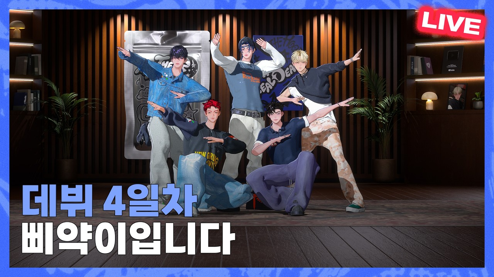

BEGRITZ分類：YOUTUBE直播日期：2026-10-21—BEGRITZ LIVE EP10. 鬼怪健身俱樂部DOHASINILUBIN 字幕最後更新：2026-10-23在 YouTube 觀看原始影片×載入 YouTube 播放器 1010速度 0.75×1×1.25×1.5×2×00:00 / --:-- 繁中韓文雙語字幕大小20%字幕位置 原先位置懸浮字幕全螢幕劇院模式字幕外觀字幕樣式白字／黑底黑字／白底黃字／黑底白字描邊／無底底色透明度25%字幕高度2%恢復預設繁體中文點播放後，字幕會顯示在這裡韓文 分享這篇@fLINE𝕏 — 人喜歡這篇 這篇字幕對你有幫助嗎？ 0.0選擇 1～5 星 平均評分載入中展開雙語逐字稿 點擊查看完整內容雙語逐字稿雙語韓文繁中 自動跟隨播放文字大小 A−A＋重設字幕偏移（秒） 字幕比聲音早出現時填正數00:18:50- 으 자 빨리 인사하세요 - 인사드리겠습니다- 快點打招呼吧 - 向大家問好00:18:55둘 셋 안녕하세요一 二 三 大家好00:18:57여러분 다들 한 주 잘 보내셨나요?大家這一週過得好嗎?00:19:01- 다들 잘 지내셨나요? - 잘 보내셨을 거예요- 大家都好嗎? - 應該都過得很好00:19:03아 전 지금 잘 못 지내는 거 같아요我現在好像不太好00:19:05아 예 일단 뭐야? 앉아서 인사 소통해 볼까요?先坐下來和大家聊聊吧?00:19:09- 어 그럴까요? - 예 감사합니다- 好啊? - 謝謝00:19:12- 너무 오래 - 의자를 소환해 주세요- 太久了 - 請召喚椅子00:19:14- 네 - 시작- 好 - 開始00:19:16오케이 아好00:19:17다리가 후들후들 떨리네요腿都在發抖00:19:20아 안녕 아 벌써 방송 끝난 거嗨 感覺直播已經00:19:22- 같아요 - 안녕하세요 아 잘 지내셨대요- 結束了 - 大家好 他們說過得很好00:19:24안녕하세요 뭐야? 신의야大家好 SINI 啊00:19:26너 살짝 덜 내려갔다는데 아 아大家說你蹲得不夠低00:19:29뭐야? 나 다리 떨리도록 하고 있었는데什麼? 我做到腿都在抖了00:19:32- 하나도 안 떨려 보였어요 - 루빈이 시작부터 무리했다- 看起來完全沒抖 - LUBIN 一開始就太勉強了00:19:35무리했다고? 나 계속할 수 있어요太勉強? 我還可以繼續00:19:37루빈이 끝에 저희는 미리LUBIN 最後才來 我們提前就00:19:40- 하고 있었는데 - 에이- 開始做了 - 哪有00:19:40그래 아 그러네 자對 也是00:19:43여러분들 다들 저희 기다리셨나요? 와大家有等我們嗎?00:19:47- 잘 지내셨나요? - 잘 지내셨나요?- 大家過得好嗎? - 過得好嗎?00:19:49오늘은 저희 비그릿츠 헬스 클럽입니다今天是 BEGRITZ 健身俱樂部00:19:52헬스클럽 드디어 다들 기대하고 있었죠? 두 분도 이健身俱樂部終於來了 大家很期待吧? 你們兩個也一直00:19:56- 날만 기다렸잖아요 - 전 벼르고 있었어요- 等今天吧 - 我早就摩拳擦掌了00:19:58- 막 그렇게 기다렸어 - 오늘 드디어 보여줄 날이다- 有那麼期待嗎? - 今天終於能展現了00:20:01루빈이의 운동을LUBIN 的運動00:20:03저는 벼르고 있었습니다 루빈이 벼르고 있습니다 당연히 기다리셨다고我早就等著了 LUBIN 早就等著了 大家說當然有等00:20:07와 아이 형은 오늘 운동 방송인데 자꾸 운동하자 해가지고今天明明是健身直播 哥卻一直說要去運動00:20:10- 그러니까요 아침부터 - 딱 몸을 풀어야 이제 운동을 제대로- 就是啊 從早上就開始 - 要先暖身 才能好好00:20:13- 딱 해주고 - 몸을 너무 많이 풀었어요 저 아- 運動 - 暖身太多了 我00:20:15방송에서 엄청 열심히 할 건데 오늘 또 제대로 하려고 저희가 만반에直播會很認真做 今天為了好好表現 我們也做足了00:20:20- 준비를 하셨죠? 다 - 네- 準備吧? - 對00:20:23엄청난 준비를 했죠 밥도 맛있는 거 먹고做了充分準備 也吃了好吃的飯00:20:25- 예 맞습니다 - 네- 沒錯 - 對00:20:26다들 헬스장에 복싱하는有人在健身房 還有人練拳擊00:20:30지금 헬스장 계신 분 덤벨도現在就在健身房的人 還有啞鈴00:20:33- 두 분이랑 같이 운동하시면 되겠다 - 저 덤벨 열번도 안 들어갔을 것- 可以和你們一起運動 - 有人說我啞鈴大概連十下都舉不了00:20:36같다는데 두 분이 해명 좀 해주세요 솔직하게請你們兩個解釋一下 說實話00:20:37덤벨 열 번 장난 말고啞鈴十下 不開玩笑00:20:40덤벨 열 번은 하죠 근데 무게가 얼마냐?啞鈴十下當然可以 但要看重量多少00:20:43그렇게 막 높진 않겠죠 오늘 제대로 제가 보여 드리겠습니다應該不會太重 今天我會好好表現00:20:46아 오늘 확실히 보여주면 되겠다 아 어제 찬이 형이 스페이스한 거 다今天證明就好了 昨天 CHAN 哥開 Space 大家都00:20:49- 같이 들었죠? - 저도 들었어요 처음 또 하니까- 一起聽了吧? - 我也聽了 畢竟是第一次00:20:52- 솔직히 어떠셨나요 - 찬이요?- 老實說覺得怎樣? - CHAN 嗎?00:20:54- 예 - 재밌죠 찬?- 對 - CHAN 很有趣啊00:20:57- 저 반했어요 - 반했다 진짜요?- 我都迷上他了 - 迷上了? 真的嗎?00:21:01- 어 찬이한테 반할 만하죠 진짜 - 네 전 좀 실망했습니다- CHAN 值得讓人迷上 - 我有點失望00:21:04- 왜요? 왜 실망했어요? - 찬이 형이 자꾸 저 날조해 가지고- 為什麼失望? - CHAN 哥一直捏造我的形象00:21:07아 아 신의가 많이 심란해 보이더라고SINI 看起來很心煩00:21:10맞아요 이제 밤에 자꾸 이제 자기 자기는 이제 이미지對 晚上一直說自己的形象00:21:14끝났다고 갑자기 저 자고 있는데完蛋了 我都睡了 他突然00:21:16물어보더라고요 루빈아 내가 그렇게 보여? 이렇게問我 LUBIN 啊 我看起來是那樣嗎?00:21:20- 아 그 정도였어요? - 네 자는데 자꾸 깨워서 물어보고- 嚴重到那種程度? - 我睡了還一直叫醒我問00:21:23- 그렇지 않습니다 - 특이해요- 才沒有 - 很特別00:21:25《Say So》 커버 잘 보셨대요 감사합니다大家說很喜歡《Say So》翻唱 謝謝00:21:27- 감사합니다 - 형이 선정했죠?- 謝謝 - 哥選的吧?00:21:30곡이 딱 잘 어울릴 것 같았는데 역시나 멤버들 다 잘 어울렸어覺得這首歌很適合 果然成員們都很適合00:21:34그렇습니다 오늘 운동즈네요 또 새로운沒錯 今天是運動組 又有新的00:21:37새로운 게 생겼네요 운동즈 운동즈新組合名了 運動組00:21:40확실히 보여 드리죠 저희 운동 실력 다들 첫 인상 말해 달라고 하는데요會讓大家看到我們的運動實力 大家要我們說第一印象00:21:43어 첫인상 한번 도하 형부터 한번 첫인상이第一印象 先從 DOHA 哥開始吧00:21:46솔직하게 말씀하세요 찬이 형은 완전 날조였고 저희 진짜 솔직하게 하시죠請說實話 CHAN 哥完全是捏造 我們誠實一點00:21:50상처 안 받잖아 상처 안 받죠? 저희 냉혈인간不會受傷吧? 我們是冷血人00:21:54- 어 일단 루빈 어 왜 눈을 감고? - 아 눈 감는 거 아니었어요? 아- 先說 LUBIN 為什麼閉眼? - 不是要閉眼嗎?00:22:00루빈이 첫인상은對 LUBIN 的第一印象00:22:05아 되게 조용해 보인다 어看起來很安靜00:22:07되게 조용해 보이는 느낌就是很安靜的感覺00:22:09되게 무겁고 되게 진중해 보인다 이런 뜻인가요?是很穩重 很沉著的意思嗎?00:22:12어 뭐 그렇게 표현할 수도 있죠 무겁고 진중해 보인다也可以這樣說 穩重又沉著00:22:15되게 조용하고 그런 친구일 줄 알았는데 일단 전혀 아니고以為他是安靜的朋友 但完全不是00:22:19- 와 - 와- 哇 - 哇00:22:21- 비슷하셨네 - 아 근데 좋아요 더 이제 첫- 印象差不多呢 - 但很好 比第一00:22:24인상보다 더 좋은 친구 더 예 더 약간 밝고 그런印象更好 是更開朗的00:22:30- 사람이었다 - 아 네- 人 - 對00:22:32- 어 또 신의는 - 저 말씀해 주세요- 然後 SINI - 請說我00:22:34신의 첫인상은SINI 的第一印象是00:22:41운동 잘하겠다 오應該很會運動00:22:43- 나랑 하면 딱이겠다 - 아 그죠- 很適合和我一起練 - 沒錯00:22:45- 딱 그런 느낌 - 그걸 느꼈죠 바로- 就是那種感覺 - 馬上就感覺到了00:22:47그리고 딱 뭔가 어 묵직해 보인다 그러니까 이然後感覺很穩重00:22:51의리 있을 것 같다感覺很有義氣00:22:53제가 원하는 답변이 다 여기서만我想要的回答 全部都只有在這裡00:22:55- 나와 - 근데 루빈이도 그래요- 才聽得到 - LUBIN 也是00:22:59- 감사합니다 - 루빈이는 알면 알수록- 謝謝 - LUBIN 是越了解00:23:01- 진국인 스타일이다 - 진국이죠- 越覺得踏實的人 - 沒錯00:23:04- 루빈 어땠는데요? - 저는 일단 이제 도하 형부터 말씀드리면- LUBIN 呢? - 我先從 DOHA 哥說起00:23:11도하 형 첫인상이 어땠냐면 처음에 말도 없으시고對 DOHA 哥的第一印象 一開始話不多00:23:17- 아 그렇죠 - 되게 뭔가 본인만의 세상에 갇혀 있- 對 - 感覺活在自己的世界00:23:21아니 그니까 갇혀 있는 사람인구나 싶었어요我是說 感覺他把自己關在自己的世界裡00:23:24- 진짜요? - 처음에 봤을 때 밥 같이 먹었는데 눈도- 真的嗎? - 初次見面一起吃飯時 連眼神都00:23:28- 안 마주치시고 - 언제 그랬다고- 不和我對上 - 我哪有?00:23:31막 반찬만 이렇게 주 그리고只是這樣遞小菜 然後00:23:34- 도하 형이 처음에 다 그러나 보다 - 네 그래서 약간 형이 나랑 좀- 原來 DOHA 哥一開始都這樣 - 對 所以覺得他在和我00:23:37- 선을 긋고 있다 - 아 저는 이제 완 제 사람한테 진짜- 劃界線 - 我會對自己人00:23:41잘해 주고 그러지 않으면 이제 좀 그 경계를很好 但還不熟時 會有點00:23:44- 하죠 처음에 - 경계를 좀 세게 하시더라고요- 戒心 - 一開始戒心很強00:23:47그리고 그때 첫날 저희 숙소에서 자는데 도하 형第一天我們在宿舍睡覺時 DOHA 哥00:23:50- 자다가 뚝뚝 소리 들려서 - 또 시작하네 또 시작해 탭댄스- 睡著後傳來咚咚聲 - 又開始了 又來了 踢踏舞00:23:54아예 없는 얘기라네完全是沒發生過的事00:23:56누가 아파트에서 택댄스를 쳐요 그거 말이 안 되는 얘기를誰會在公寓跳踢踏舞? 說這種不合理的話00:24:00신의는 솔직하게 진짜 놀리려는 게 아니라 그때 도하 형한테도SINI 的話 我不是故意逗他 當時也和 DOHA 哥00:24:04- 말씀드렸지만 형인 줄 알았어요 - 그죠?- 說過 我以為他是哥哥 - 對吧?00:24:06- 신의가 형인 줄 알았어요 저는 - 그렇게 알았다- 我以為 SINI 是哥哥 - 原來這樣00:24:09이게 늙어 보인다 이런 게 아니라 좀 더 뭔가 나보다不是說他看起來老 而是感覺比我00:24:14- 진중하고 듬직해 보인다 풍기는 이미지가 - 감사합니다- 更沉著可靠 散發出這種氣質 - 謝謝00:24:17- 근데 이제 같은 방을 써본 결과 - 똑같다 둘이 똑같다 비슷하다- 結果同住一間房後 - 一樣 你們兩個一樣 很像00:24:23- 비슷한 면이 확실히 많다 - 맞죠? 맞죠?- 確實很多地方很像 - 對吧?00:24:25저도 좀 얘기하자면 도하 형이我也說一下 DOHA 哥00:24:28처음에 절 경계를 많이 하시더라고요一開始很防備我00:24:30- 무슨 다들 - 맞아요 저는 초반 일주일 정도는- 怎麼大家都這樣說 - 對 我一開始大概一週00:24:34- 도하 형 눈을 못 맞췄어요 - 맞아요- 都不敢和 DOHA 哥對眼 - 對00:24:36눈이 너무 무섭게眼神太可怕00:24:38- 에이 또 그렇게 얘기를 해요 - 아 오셨어요? 뭐야? 아 그때는 내- 怎麼又這樣說 - 你來了嗎? 什麼啊? 那時還不是我的00:24:42사람이 아니었다가 아니고요 그때 진짜 처음 만났을 때요 처음 딱自己人 不是那個意思 是第一次見面時00:24:46처음 딱 마주쳤을 때 근데 이제 가장 먼저 친해졌던 사람은 루빈이죠剛見面那時 最先熟起來的是 LUBIN00:24:51- 그렇죠 - 루빈이가 계속 저한테 말 걸어주고- 對 - LUBIN 一直主動和我說話00:24:53이렇게 해가지고 그렇게 해서 빨리 친해졌다가 또 도하 형이랑도 나중에 이제所以很快就熟了 後來也和 DOHA 哥00:24:57- 대화를 많이 하는데 통하는 게 너무 많았어요 - 맞아- 聊很多 發現很多地方很合得來 - 對00:25:00- 그래서 엄청 급격하게 친해졌어요 - 맞아- 所以迅速變熟了 - 對00:25:03- 말도 안 되게 - 그랬죠- 快得不可思議 - 是啊00:25:04그죠 지금은 뭐 제일 좋습니다 둘 다現在感情最好了 你們兩個00:25:07지금은 원 그리고 나머지 분도 다 좋고요 다 정말 사랑하는 분들이고現在 其他人也都很好 都是我很愛的人00:25:11근데 찬이 형은 어제 살짝 그 살짝 실망을 좀 많이 했어요但昨天對 CHAN 哥 有點失望00:25:15와 찬이 형 그런 사람이 아닌데 갑자기CHAN 哥明明不是那種人 卻突然00:25:18- 갑자기 날조를 확 하시더라고요 - 아니 근데 완전 오해하신다- 開始捏造 - 大家完全誤會了00:25:23제가 처음에 경계를 한게 아니고요 아 그니까 경계를 한다기보다 이제我一開始不是在防備 與其說防備00:25:27진짜 내 사람들한테 더 잘하는 거죠 여러분들은 근데 처음부터 이제 우리是對自己人更好 大家從一開始就是我們的00:25:33사람들이니까네 완전 좋아했죠自己人 所以很喜歡00:25:35찬이가 도하 형 잘생겼다고 칭찬해 줬대요對吧? CHAN 稱讚 DOHA 哥長得帥00:25:40- 아 저요? - 도하 형 되게 남자답게 생겼잖아요- 我嗎? - DOHA 哥長得很有男子氣概00:25:42아 감사합니다 찬이가 칭찬해 줬더라고요 찬이가 저를 다른 분들은謝謝 CHAN 稱讚我了 其他人00:25:47- 저는 그냥 초딩이라고 - 찬이 형이 너를- 他說我就是小學生 - CHAN 哥說你00:25:53나를 초딩으로 봤다고?說我是小學生?00:25:55나를 푸딩으로 생각했다고 그러던데他好像把我當布丁了00:25:57- 맞아 - 그래요 넘어 넘어가시죠- 對 - 好 繼續吧00:26:01아 오케이 첫 인상은 이렇고 솔직히 말하면 첫 인상 막 기억이第一印象大概是這樣 老實說 第一印象也不是00:26:05- 확실히 나지 않죠 - 네- 記得那麼清楚 - 對00:26:07맞아요 완전 확실히 나는 느낌은 아니잖아 맞아對 也不是每個細節都記得00:26:10첫인상보다 지금 인상들이 너무 좋기 때문에因為現在的印象比第一印象更好00:26:12첫인상 안 좋다는 거?所以第一印象不好?00:26:14첫인상은 솔직히 다들 무서웠어요老實說 第一印象大家都很可怕00:26:18- 아 왜 무서워요? - 저는 집밖에 나가면 무서워요 보통- 為什麼可怕? - 我通常出門就害怕00:26:21- 겁이 많습니다 - 네- 很膽小 - 對00:26:23지나가는 개미 보다가도 깜짝 놀라고 그래요連路過的螞蟻都會讓我嚇一跳00:26:26아 이거는 지금은 완전 가족이죠 근데 완전現在完全就是家人00:26:29완전 패밀리 아 팬분들이 궁금해하시는 부분을完全是一家人 粉絲們好奇的事情00:26:33나중에 이제 좀 더 생각나는 거 하나씩 더 말씀드리도록 하겠습니다之後想到什麼 再一件件告訴大家00:26:37또 아까 막 뭐 제가 운동 잘해 보인다 도하 형 이래 가지고 뭐剛剛有人說我看起來很會運動 和 DOHA 哥00:26:41라이벌이냐 이런 댓글이 있었는데 라이벌이라는 것보다는 좀 같이 이제是競爭對手嗎? 與其說對手00:26:46드디 운동 같이 할 수 있는 멤버가 생겼다是終於有能一起運動的成員了00:26:47아 그지? 완전 그런 것 때문에 정말 잘 맞았죠對 因為這樣 所以很合得來00:26:50예 그 또 요즘 루빈이가 운동도 열심히 하잖아요最近 LUBIN 也很認真運動00:26:53- 열풍이죠 - 열풍인가요?- 是熱潮呢 - 熱潮嗎?00:26:56열풍이에요 열풍 지금 이루빈 열풍입니다 운동 열풍 루빈이가是熱潮 現在是 LUBIN 熱潮 運動熱潮 LUBIN00:26:59요새 운동을 또 열심히 하고 있습니다最近也很認真運動00:27:01루빈이이 운동 어때요? 요새 어떤 거 같아요?LUBIN 最近覺得運動怎樣?00:27:03저 진짜 할 때마다 뿌듯하고 네每次做都很有成就感00:27:06아니 어떤 거 하시냐고요? 어떤 운동하시냐고不是 我是問你做什麼運動00:27:10그냥 형 도하 형이 하는 거 옆에서 따라해요就在旁邊跟著 DOHA 哥做00:27:12- 같이 루틴 해 주고 - 근데 루빈이가 여기 있어도 되는- 一起幫他安排訓練 - 有人問 LUBIN 在這裡00:27:16- 거 맞지? 이러시지만 - 아 그리고 루빈이가 또 오늘- 沒問題嗎? - 今天 LUBIN 也00:27:19- 네 저의 모습을 보여 드릴게요 - 예 많이 또 하고 같이 하고 루빈이- 會讓大家看到我的實力 - 經常一起練 LUBIN00:27:23같이 하면 잘 따라와 가지고 지금 제일 빨리 늘고也跟得很好 所以現在進步得00:27:28- 있습니다 - 루빈이도 빼지 않아요- 最快 - LUBIN 也不會推託00:27:29하세요 아做吧00:27:31네 오好00:27:33- 오 저기 뭐예요? - 뭐요?- 那是什麼? - 什麼?00:27:36저기那個00:27:40기프트 간식이 뭐야?禮物零食是什麼?00:27:42약과를 주셨어요 또 또 요즘 약과 유행하잖아요送了藥菓 最近藥菓很流行00:27:45오 약과를 주신 거요? 우와 처음 처음送藥菓了? 第一次00:27:48받아본다 이러 이게 어떻게 해야 되까? 이거 뭐收到 這要怎麼做?00:27:51감사합니다 다 같이 인사하자 둘 셋謝謝 大家一起道謝 一 二 三00:27:57- 감사합니다 - 감사합니다- 謝謝 - 謝謝00:27:59처음 이런 걸 받아보네요 저희가 처음이라서 잘 모르긴 하는데第一次收到這種東西 我們是第一次 還不太懂00:28:04저는 그 채팅을 치신 줄 알았어요 잘 몰라서가지고 감사합니다我以為是在打留言 不太懂 謝謝00:28:08감사합니다 약과 약과다 약과謝謝 是藥菓00:28:11약과 100개면이 이제 앞으로 오 감사합니다 오 뭐 신기한게一百個藥菓 謝謝 有很多新奇的00:28:14많다 브위도 있네東西 還有 V00:28:17- 이게 V 하면 되나요? - 두 개 해야 되는데- 這個要比 V 嗎? - 要比兩個00:28:18- 두 개를 이렇게 하면 되는데 - 아 두 개 두 개 V- 要這樣比兩個 - 兩個 V00:28:20감사합니다 와우謝謝00:28:23와 오늘 와 처음 해 본다 감사합니다 여러분今天第一次做 謝謝大家00:28:27아 오늘 그럼 더 힘내 가지고 우리 또那今天我們要更有精神00:28:29당 충전도 약과로 했으니까 더 힘내 가지고 한번 해볼까用藥菓補充糖分了 更有精神地開始吧00:28:33- 오늘 100개해야겠다 - 죄 뭘 100개해요?- 今天要做一百下 - 什麼一百下?00:28:35- 무슨 100개예요? - 아무거나 어- 什麼一百下? - 什麼都行00:28:38저희가 록 앤드我們 Rock and00:28:40롤은 어떻게 해야 되지? 뭐예요? 어렵다Roll 要怎麼做? 什麼啊? 好難00:28:44- 감사합니다 - 감사합니다- 謝謝 - 謝謝00:28:48- 감사합니다 - 감사합니다 뭐지?- 謝謝 - 謝謝 什麼啊?00:28:50아 감사합니다 저희 자 그러면은謝謝 那我們00:28:53저희 또 네也00:28:54해야 될 것들이 있잖아요 우리 오늘 운동 많이 해야 되는데還有事情要做 今天要做很多運動00:28:58운동하니까 생각난 건데 도하 형님께서說到運動 突然想到 DOHA 哥00:29:02이제 턱걸이 100개 한다고 하시지 않았나요?不是說要做一百下引體向上嗎?00:29:05제가 100개요? 아我說一百下?00:29:06맞아 그죠? 신의 들었지 그러니까對 SINI 也聽見了吧?00:29:08100개를 한다는 게 아니고 팬분들한테 말씀드린 거不是說要做一百下 我對粉絲說的00:29:11- 거짓말 치셨어요? - 한다는 게 아니고 100개를 하는 그날까지 여러분과 함께 하고- 你說謊了嗎? - 不是說我做得到 是做到一百下的那天 都想和大家00:29:15- 싶다 그게 정말 어려운 거니까 그 - 100개 하신다 했잖아요- 在一起 因為很難 - 你不是說要做一百下嗎?00:29:19- 어쨌든 100개 하신다 했잖아요 - 그니까 못하니까- 反正你說要做一百下 - 就是因為做不到00:29:23- 증 증거 자료도 있어요 - 아 그래요? 증거 자료가 있어요?- 還有證據 - 真的嗎? 有證據?00:29:26증거자료가 있다고 합니다 오據說有證據00:29:28자 증거 자료 보여 주세요 와 보죠 이게 보세요 제가請放證據 大家看00:29:36턱걸이를 100개 하는 그날까지 이렇게 계속 만들어 가자 100개가直到我做到一百下引體向上那天 都繼續創造回憶 因為一百下00:29:41정말 어려우니까 불가능하니까 평생 보자 이런 뜻이었습니다很難 不可能 所以是想一輩子見面的意思00:29:45턱걸이는 어깨로 하는 거냐 전완근으로 하는 거냐 여쭤보시는데有人問 引體向上是用肩膀 還是前臂肌?00:29:49전완근도 당연히 쓰이고 팔도 당연히前臂肌當然也會用到 手臂也00:29:53- 쓰이지만 턱걸이는 등 운동이 - 또 도하 형의 턱걸이 자세가 진짜- 會用到 但引體向上是練背 - DOHA 哥的引體向上姿勢00:29:58- 예술이거든요 - 맞죠- 很漂亮 - 對00:30:00턱걸이는 등으로 해가지고 등 운동을 하고 싶다면 턱걸이 최고입니다引體向上是用背 想練背的話 引體向上最好00:30:03여러분 전완근은 당연히 쓰이게 되고當然會用到前臂00:30:06- 그렇죠 - 그래서 여러 가지 운동을 할 수- 對 - 所以能做各種00:30:08- 있습니다 맨몸 운동이 정말 좋아요 - 맨몸 운동 최고죠?- 訓練 徒手訓練很好 - 徒手訓練最好吧?00:30:11- 최고죠 - 턱걸이 팔굽혀펴기만 해도- 最好 - 光做引體向上和伏地挺身00:30:13- 100개 하면 팔 터진 나는데요 - 100개 하면 팔 터지죠 진짜- 有人說做一百下手臂會爆 - 一百下當然會爆00:30:16그러면 하지 마세요 영那哥不要做00:30:19- 아 그 못 한다니까요 - 하지 마세요- 我就說做不到 - 不要做00:30:21그러면은 여러분 두 분이 좀 도와주면은你們兩個幫忙的話00:30:24- 근데 저희가 도와드릴까요? - 예- 要我們幫忙嗎? - 對00:30:27두 분이서 같이 도와줘 세 명 합쳐서 100개는你們兩個一起幫我 三個人一百下00:30:30사실 어려워요 근데 근데 저희는 사전 된게其實很難 但我們沒有事先00:30:32아니잖아요 그죠?說好吧? 對吧?00:30:33그렇죠 부탁해 주세요 부탁 더對 請拜託我們 再拜託得更00:30:37도와줘라 동생들아 예幫幫我 弟弟們00:30:39도와줘라 한번 이거는 어떻게 할까요? 그럼 어떻게 하길 바라는 거야? 좀幫幫我 要怎麼做? 你希望怎樣?00:30:45더 재밌고 뭔가 더 뭔가 더 유쾌하고更有趣 更開心一點00:30:49하지만 내가 혼자 하려니까 정중하고 정중하고但讓我獨自 還要誠懇一點00:30:53부탁하신 입장이 부탁드리겠습니다 저 동생님들 제畢竟是拜託別人的人 弟弟們 拜託了 請00:30:57100개 한번 해야 되니까 애교까지 해주세요一起挑戰一百下 請撒嬌00:31:00애교 해 주세요 그럼 저희의 답변을 듣겠습니다撒嬌吧 那我們的回答是00:31:03저는 안 하겠습니다 장난이고요我不要 開玩笑的00:31:05부부 사기단이라고 우리가 사기가 아니라有人說是夫妻詐騙團 我們不是詐騙00:31:09저희는 진심으로 오래 보고 싶으시다고 100개 안我們是真心的 大家說想見很久 不做一百下00:31:12해도 된다고 하시는데 어也沒關係00:31:14아 근데不過00:31:16그렇다고 최선 다해야죠 진짜로 부탁하는 거고 우리 한번即使如此還是要盡力 我是真心拜託 我們來00:31:21도전을 해서 100개 못 하더라도 최대한 얼마나 할 수 있나죠 네挑戰看看 即使做不到一百下 也看看最多能做多少00:31:25- 몸 풀어요 말아요? - 풀어 제대로 해요- 要暖身嗎? - 要 好好做00:31:27- 한번 일어나서 몸 좀 풀어 볼까요? - 네 좋습니다- 起來暖身吧? - 好00:31:30지금 의자 없애 주세요 후請把椅子收起來00:31:34아 됐다 좋습니다好了 很好00:31:35그럼 이제 풉니다 몸 어떻게 푸세요? 턱걸이 하실 때開始暖身 做引體向上時 都怎麼暖身?00:31:37근데 턱걸이도 그냥 하면은 다칠 수 있잖아요引體向上直接做也可能受傷00:31:40- 목도 한번 풀어 주고 - 목을 풀어요?- 先活動脖子 - 脖子也要?00:31:42예 다 풀어 줘야죠 이쪽 어깨도 풀어주고 악全身都要 肩膀也活動一下00:31:45자 아니 그건 몸을 어디 푸는 거예요你這是在活動哪裡?00:31:48지금? 그래서 다리 힘도 들어가는 거예요腿也要用力00:31:50그죠? 전체 다 풀어 주면 좋아요이 위에부터 쭉 내려오면서對 全身活動一下很好 從上面一路往下00:31:54해주고 자 어떤做 然後00:31:55어 비 처음 보러 왔대요 와 안녕하세요 감사합니다有人第一次來看 大家好 謝謝00:31:59안녕하세요 자 그럼 처음 처음부터 턱걸이大家好 那第一次就看我們挑戰00:32:01100개 하는 걸 보여 드리고 그러면 노래 시작했다 노래 끝났다一百下引體向上 像是歌曲開始了 歌曲結束了00:32:05느낌이네요 자 그러면은那種感覺 那我們00:32:07준비운동 제대로 하셔야 돼요 안 다치려면要好好暖身 才不會受傷00:32:09다들 잘 되고 있으시죠? 기지개도大家都做得不錯吧? 也來00:32:12한번 펴주고 헤이伸個懶腰00:32:16축구하세요? 제대로 해야 돼요 준비운동你在踢足球嗎? 要好好暖身00:32:18자 좋습니다 자 좋습니다 다치지 말고很好 不要受傷00:32:21예 다치지 않게 다들 잘 풀셨나요? 보통 어깨가 다치죠大家都暖好了吧? 肩膀通常容易受傷00:32:25잘 풀어주고 저부터 할까요? 비밀 병기부터好好暖身 我先嗎? 從祕密武器開始00:32:29- 운동 아 거의 안 푼 거 아니에요? - 더 풀어야 되는 거였어요?- 幾乎沒暖到身吧? - 還要再做嗎?00:32:32뭐죠? 아 그러면은 뭐야 저 도와드릴게요네 자 같이이那我幫你們 大家一起00:32:36구호에 맞춰서 푸는 거예요 뭐 고개부터跟口令做 從頭開始00:32:39자 오케이 자 내가 하나 둘 셋 넷테니까好 我喊一 二 三 四00:32:42- 둘 둘 셋 넷 해 주시면 돼요 - 알겠습니다- 你們接二 二 三 四就好 - 知道了00:32:44시작하겠습니다 하나 둘 셋 넷 다섯 여섯 일곱 여덟 반대로開始 一 二 三 四 五 六 七 八 換邊00:32:50둘 셋 넷 다섯 여섯 일곱 여덟 왜 구호 안 하세요?二 三 四 五 六 七 八 為什麼不喊口令?00:32:55- 구호 해야죠 - 그렇게 강압적인 준비운동을 해요?- 要喊啊 - 暖身也這麼強制嗎?00:32:58제대로 하세요 자 어깨 자認真做 來 肩膀00:33:00자 앞뒤로往前往後00:33:02앞뒤로 셋 넷 다섯 여섯 일곱 여덟 둘 둘 셋 다섯 여섯 여섯 일곱 여덟前後 三 四 五 六 七 八 二 二 三 五 六 六 七 八00:33:10하나 둘 셋 넷 다섯 여섯 일곱 여덟 둘 둘 셋 넷 다섯 여섯 일곱 여덟一 二 三 四 五 六 七 八 二 二 三 四 五 六 七 八00:33:18어 같이 하세요 같이 여러분들 같이 지금大家一起來 現在一起00:33:21도하 형이 하는 것처럼 같이 하시면 몸 싹 풀고像 DOHA 哥這樣做 全身暖好00:33:26또 스트레칭이 인생에서 겁나 중요한 거 아닙니까?伸展在人生中很重要 不是嗎?00:33:28- 박자 세고 있는데 왜 아무도 안 맞아? - 누가 아무도 안 맞았어요?- 喊著拍子 怎麼沒人對得上? - 誰沒對上?00:33:32아 그래요? 아 자 오케이是嗎? 好00:33:35- 저 파이팅 보내주세요 - 파이팅 파이팅 파이팅 감사합니다- 給我加油吧 - 加油 加油 加油 謝謝00:33:39자 파이팅 더 해서 이거 허리 돌리기再加把勁 接著轉腰00:33:41자자 도하 형 이렇게 하셔야 되는 거DOHA 哥 不是要這樣00:33:42아니에요? 저처럼 하셔야 되는 거 아니에요?做嗎? 不該像我這樣嗎?00:33:47그 허리 운동이 아니잖아요 아 앉아서 하셔도 돼요這不是練腰的動作 坐著做也可以00:33:50다치지 않게 셋 이제 됐다不要受傷 三 好了00:33:55그 저는 스트레칭 그렇게 열심히 아 안 해요我伸展不太認真做00:33:56- 저도요 - 스트레칭이 사실 더 중요해요- 我也是 - 伸展更重要00:33:59아 그죠 시작할 때랑 끝날 때對 開始和結束時00:34:01네 자 이제 좀 상체 풀렸죠?上半身暖開了吧?00:34:03다 풀렸어요 더 풀면暖好了 再暖下去00:34:05힘들어요會累00:34:07루빈이 한번 보여줄까요? 바로 해볼까요?讓 LUBIN 展現一下吧? 直接開始嗎?00:34:09몇 개 원하세요? 100개 해야 된다니까希望我做幾下? 不是說要一百下嗎?00:34:12100개 하려면 몇 개 정도 하실 거예요?要湊一百下 你打算做幾下?00:34:14100개 100개 하려면은 이제 루빈이가 한 열 개만 해 줘도要湊一百下 LUBIN 做個十下00:34:17- 고맙죠 - 저는 솔직히 뉴비이기도 하고- 我就很感謝了 - 老實說 我是新手00:34:19- 네 열 개 도전 - 두 개 도전하겠습니다- 挑戰十下 - 我挑戰兩下00:34:23- 두 개라도 오케이 - 오케- 兩下也行 好 - 好00:34:25- 야 턱걸이 소환해 주세요 - 네 턱걸이 먼저 소환- 請召喚單槓 - 先召喚單槓00:34:27제가 사전에 통계를 찾아본 게 있어요我事先查了一些統計00:34:30뭐죠?什麼?00:34:30뭐요? 찾아봤는데 도하 형이 저번에 30개我查了一下 DOHA 哥上次不是做了三十下00:34:32하셨잖아요 30개가 어느 정도일까를 제가 분석을嗎? 我分析了一下三十下00:34:35- 좀 해 봤어요 - 30개?- 到底是什麼程度 - 三十下?00:34:36예 예 이제對00:34:39성인 중 한 개를 할 수 있는 사람이 생각보다 많이 없습니다成年人裡 能做一下的人比想像中少00:34:43- 아 진짜요? - 생각보다 많이 없다고 하더라고요- 真的嗎? - 據說比想像中少00:34:45- 아 그래요? - 그렇게 해서 열개 정도를 하면은 상위- 是嗎? - 所以能做十下 就是前00:34:493에서 5% 이내래요 그리고 15개를 하면은 1% 이내고百分之三到五 十五下就是前百分之一00:34:54도하 형이 30개 했잖아요 30개가 0.01%DOHA 哥做了三十下 是百分之零點零一00:34:58그니까 어제 신의가 밤에 이거 어제 달달 외우더라고요 밖에서昨天 SINI 晚上在外面把這個背得滾瓜爛熟00:35:02이거 얘기하겠다고 제가 이거 얘기하겠다고 준비 열심히 했습니다為了說這個 我很認真準備了00:35:04열심히 했습니다 그러면 이제 도전인 거죠?很認真 那現在開始挑戰嗎?00:35:07예 저는 근데 좀 색다르게 하니까 전對 我比較特別00:35:09- 도움닫기로 시작할게요 - 도움닫기를 한다고요?- 我要先助跑 - 要助跑?00:35:12도움닫기로 턱걸이를 해요? 처음 듣네做引體向上還助跑? 第一次聽到00:35:14여기서부터 할게요 근데 서로 못 한다고 비난 주고我從這裡開始 但如果你們因為我做不好00:35:18그러면 전 다음부터就批評我 我下次就00:35:21- 다치지만 마요 다치지만 - 헬스 같이 안 다닙니다 뭐라 하면- 注意別受傷就好 - 不和你們一起去健身房了 敢說我的話00:35:24요즘 같이 안 가는 거네 시작해 주세요最近就不一起去了嘛 請開始00:35:27- 예 갑니다 시작 - 시작- 開始 - 開始00:35:30자 루빈 좋다 좋다 오 준비됐다LUBIN 很好 準備好了00:35:33- 준비됐다 갑니다 하나 - 하나- 準備好了 來了 一 - 一00:35:37아이 그냥 내려온 거 아니야? 아니你只是直接下來了吧?00:35:40잠시만요 한 번 더 할게요 죄송합니다等一下 我再一次 不好意思00:35:42한 번 더 해요 도전 안 외쳤으니까再一次吧 因為沒喊挑戰00:35:48잠시만요 이게 이게 정상적인 거 맞죠?等一下 這個正常吧?00:35:50- 아 정상적이죠 완전 - 기계적 결함이 있는 건 아니죠?- 當然正常 - 沒有機械故障吧?00:35:54한번 해보세요 자 도전試試吧 挑戰00:35:56- 네 갑니다 - 자 도전 왜요?- 開始 - 挑戰 怎麼了?00:35:57도전 할 수 있어 자挑戰 做得到00:35:59- 자 갑니다 도전 - 자 갑니다- 開始 挑戰 - 開始00:36:06- 점프 하나 하나 둘 둘 - 둘 둘- 跳 一 一 二 二 - 二 二00:36:12- 뭐야? 세 개 세 개 - 세 개 세 개- 什麼? 三下 三下 - 三下 三下00:36:15세 개면 그래도 꽤 했네요 세 개면 신기록三下也算不少 三下是新紀錄00:36:20솔직히 말할게요 많이老實說 我還能00:36:21- 더 할 수 있어요 저 - 아 그래요? 그럼 더 있어야지- 做更多 - 是嗎? 那應該多做啊00:36:24네 근데 두 분의 능력치를 보고 싶어서但我想看看你們兩個的實力00:36:27그러면 신의 선수 한번 해那換 SINI 選手來00:36:30보겠습니다 자試試00:36:32파이팅 세 개 세 개 여러분 세 개 해加油 三下 大家說三下00:36:35해 주신다고 루빈아 노래 열심히 하자네他們說 LUBIN 啊 好好唱歌吧00:36:38- 노래 열심히 하겠습니다 - 대견하대요- 我會認真唱歌 - 說你很值得驕傲00:36:41한번 해볼게요 신의 잘하지來試試 SINI 很厲害吧00:36:45신의 잘하죠 신의 간다SINI 很厲害 SINI 上了00:36:47- 아 부담을 주지 마세요 - 자 아 도전- 別給我壓力 - 挑戰00:36:50- 도전도전 - 어 도전 안 했으면 큰일날 뻔했네- 挑戰 挑戰 - 還好有喊挑戰 差點出事00:36:53간다 자 잘들어 갑니다開始 來了00:36:56예 자 진짜 갑니다真的要開始了00:36:58- 네 하세요 - 진짜 할게요- 請做 - 真的開始00:36:59네 루빈이 잘했대요大家說 LUBIN 做得很好00:37:00- 아 감사합니다 - 자 네 해보겠습니다- 謝謝 - 我試試00:37:03네 하나一00:37:05하나 둘 셋 넷一 二 三 四00:37:08다섯五00:37:10일곱 여덟 아홉 열 12 13 14七 八 九 十 十二 十三 十四00:37:1916 17 18十六 十七 十八00:37:22점점 내려와越來越往下00:37:25와 23개 와哇 二十三下00:37:29진짜 잘했다 와 대박做得很好 太厲害了00:37:32대박 위에 햄버거 있다고 생각하래太厲害了 大家要你想像上面有漢堡00:37:36눈을 감고 저 진짜 열심히 했어요閉著眼睛 我很認真做了00:37:39- 와 진짜 잘했다 - 리스펙- 做得很好 - 佩服00:37:41진짜 진짜 리스펙真的佩服00:37:43지금 둘 다 신기록 달성입니다 나이스兩個人都創新紀錄了 太好了00:37:46- 저 못 하겠어요 이제 - 야 이게 뭐라고 긴장이 되냐?- 我現在沒力了 - 這有什麼好緊張的?00:37:48확실히 신의가 좋아SINI 果然 很好00:37:52아 감사합니다 자謝謝00:37:55아 저도 자 우리의 리더我也 我們的隊長00:37:56우리의 리더 지금 몇 개 몇 개를 해야 되는 거죠?我們的隊長現在要做幾下?00:37:59그래서 100개를 하려 그러면 지금 아 지금 23개죠?要湊一百下的話 現在是二十三下吧?00:38:03- 23 77개 - 77개- 二十三 還有七十七下 - 七十七下00:38:0677개 근데 사실 그렇게 어렵지 않은七十七下 其實不是很難的00:38:08숫자예요 형한테 어렵지 않은 숫자 어렵지數字 對哥來說不難00:38:09않아요 태어나서不難 我這輩子00:38:12- 30개 이상을 해 본 적이 없는데 - 럭키세븐이 두 개나 있어요- 沒做過超過三十下 - 有兩個幸運七00:38:15그래요? 77 할 수 있죠?是嗎? 七十七下沒問題吧?00:38:17가볼게요 아我試試00:38:19700개 이상은 해야 된대요 형은 할 수 있죠有人說至少要七百下 哥可以吧00:38:23- 가본다 - 신의 연기 빼고 다 잘한대- 開始 - 大家說 SINI 除了演戲什麼都會00:38:25- 어 아니에요 저 연기 잘해요 - 연기요?- 才沒有 我很會演戲 - 演戲?00:38:30- 네 - 네- 對 - 好00:38:30- 지금도 힘든 연기한 거죠 - 아 그렇죠 이것 이것까지가- 現在也在演很累的樣子吧 - 對 連這個都是00:38:34- 연기예요 - 도전해주세요- 演技 - 請喊挑戰00:38:35도전 와挑戰00:38:36- 그런 거 얘기하지 말아주세요 - 미안- 別說出來 - 對不起00:38:39갑니다 에헤開始00:38:41도전 시작합니다 파이팅挑戰 開始 加油00:38:46하나 둘 셋 넷 다섯 여섯 일곱 여덟 아홉一 二 三 四 五 六 七 八 九00:38:54열 11 12 둘 셋 넷 다섯十 十一 十二 二 三 四 五00:38:59여섯 일곱 여덟六 七 八00:39:02아홉 20 하나 둘 둘 셋 좋다 넷 다섯 여섯九 二十 一 二 二 三 很好 四 五 六00:39:09일곱 여덟 아홉은 더 할 수 있다 하나 둘 셋 넷七 八 九 還能繼續 一 二 三 四00:39:18여섯 할 수 있다 할 수 있다 할 수 있다 할 수 있다 아니야六 做得到 做得到 做得到 做得到 不是00:39:20내려오지 마 내려오지 마 내려오지 마別下來 別下來 別下來00:39:24내려 지금 몇 개 했어요 저? 아 몇 개下來 我現在做幾下了?00:39:26했냐고요? 지금 37개가 아 많이 넘었어요幾下? 三十七下 已經超過很多了00:39:28자 38 두 개 두 개三十八 再兩下 兩下00:39:32안 돼 안 돼 내려줘不行 不行 放我下來00:39:35- 내려줘 - 왜?- 放我下來 - 為什麼?00:39:39형 37개면 진짜 대박이다哥 三十七下很厲害了00:39:43아 3개 그럼 몇 개야三下 那總共幾下?00:39:47그러면 몇 개 그럼 50개 넘겼어요 50개를總共幾下? 超過五十下了00:39:50오 50개 그러면 절반은 성공했다는 소리 이거五十下 那就是成功一半了00:39:53이거 저는 거의 반 성공인 거죠我幾乎成功一半了吧00:39:54이건 대단한 겁니다 루빈이 빼고 다 잘했어很厲害 大家說除了 LUBIN 都做得好00:39:5662개 와 이거 우리가 다 만들어 낸 거예요六十二下 這是大家一起創造的00:39:59어 잠깐만 와 이게 막 눈물이 나네 힘들어 가지고 그죠等一下 累到都流淚了 對吧?00:40:03와 잘했다 잘했다做得很好00:40:06대박이네 좋습니다 도하랑 신의는 앞으로 테토즈太厲害了 大家說 DOHA 和 SINI 以後叫睪固酮組00:40:10- 테토 좋다 테토즈 - 저도 있는데- 睪固酮組不錯 - 我也有份 我也在00:40:15루빈이는 안 되겠다LUBIN 不行00:40:16루빈이는 아기즈 아기즈 진짜 연습 열심히LUBIN 是寶寶組 這個認真練習的話00:40:21하면 연습 열심히 하면 성공하겠는데요認真練習應該能成功00:40:24어 진짜 할 수 있겠다 근데 또 저희가 할 수도 있는데感覺能做到 我們或許做得到00:40:28여러분들 오래 만나려면 개수를但為了長久和大家見面00:40:31- 채우면 안 되죠 - 숨 고르고 얘기하세요 숨 고르고- 就不能湊滿吧 - 先喘口氣再說00:40:34릴렉스 릴렉스 백개도 채우면 안 되잖아요放鬆 放鬆 不能湊滿一百下00:40:36아 그죠 그렇죠 100개 채우면 안 되니까對 不能湊滿一百下00:40:40- 한번 마실까요? 저희 힘드니까 - 아니요 아니요 - 왜요?- 我們累了 喝一口吧? - 不要 不要 - 為什麼?00:40:42- 물은 마시지 않습니다 - 왜요?- 我不喝水 - 為什麼?00:40:44- 그냥요 - 뭐야?- 沒為什麼 - 什麼啊?00:40:46운동할 때 여러분 수분 섭취를 많이 해 주셔야 돼요大家運動時要多補充水分00:40:49아 그죠 운동할 때 수분 섭취를 많이 해 줘야對 運動時要多喝水00:40:53신의가 물을 안 가져와서 안 먹는 건가?SINI 是沒帶水 所以才不喝嗎?00:40:55- 맞아요 내 거 줄게 - 물 좀 빌려주세요- 對 給你我的 - 借我一點水00:41:01어 뭐야? 뭐야? 뭐야? 왜 안 줘?什麼啊? 為什麼不給?00:41:03장난이야? 좋습니다開玩笑嗎? 好00:41:06아 감사합니다謝謝00:41:10여러분들 저희가 100개 언젠간 꼭 하도록 하겠습니다大家 我們總有一天會做到一百下00:41:13네 와 100개對 一百下00:41:14진짜 이 아 이게 어렵네요 생각보다 저희比想像中難呢 我們00:41:16솔직히 열 개 할 줄 알았어요 제가老實說 我以為自己能做十下00:41:18아 루빈이가 근데 진짜 도하 형만큼만 하면 되네LUBIN 只要做到和 DOHA 哥一樣多就好00:41:20- 그 성공이네 - 성공 어렵지- 就成功了 - 成功很難00:41:22- 성공이에요 성공 - 나도 하고 싶- 成功了 - 我也想00:41:25- 조금만 더 늘면 진짜 돼 - 공주니까 괜찮아- 再進步一點就可以了 - 因為是公主 沒關係00:41:28맞아요 루빈이 공주죠對 LUBIN 是公主00:41:30예 루빈이 공주니까 루빈이 100개 하는 그날까지 보는 거니까 여러분들LUBIN 是公主 要看到 LUBIN 做到一百下的那天00:41:36- 평생 볼 수 있겠다 - 아 저 진짜 끝까지 보시겠다- 可以見一輩子了 - 真的會看到最後00:41:40안 되네요 이게 나중에 다섯 명이면 도전할不容易 五個人的話值得00:41:43만하겠네 다섯 명이면 다섯 명이면 하죠挑戰 五個人就可以00:41:46될까요? 될까요?可以嗎? 可以嗎?00:41:48생각해 봤는데 안 될 것 같은데 한 달에 한 번 운동 방송想了想 好像不行 一個月一次健身直播00:41:52- 아 좋죠 - 아 좋습니다 여러분이 운동 같이 해- 很好啊 - 大家願意陪我們00:41:55주신다면 맞아요 맞아요運動的話 沒錯00:41:56너무 좋습니다 좋아요 여러분도 같이 하셨죠?太好了 大家也一起做了吧?00:42:00같이 하셨을 거라 자신 없는應該一起做了 沒自信嗎?00:42:02예 자신 있죠 자신 있죠 아 자신 있죠 완전 자신有自信 當然有自信00:42:05저한테 한 달만 주시면 제가 열 개 해올게요給我一個月 我就練到十下00:42:07열개 아니 세 개十下 不 三下00:42:09아 지금도 세 개 다섯 개現在就三下了 五下00:42:11다섯 개 어 다섯 개 근데 이제 하나를 성공하죠 여러분들 석거리는五下 不過大家 引體向上只要成功00:42:15- 하나만 성공하면 열 개는 금방합니다 - 진짜요?- 一下 十下就很快了 - 真的嗎?00:42:18진짜요? 그죠? 아니에요 루빈 저는 저는真的嗎? 不是 LUBIN 我00:42:22- 몇 년 동안 세 개 하고 있는데요 - 계속 받쳐서 해서 그래 안- 幾年來都只能做三下 - 因為你一直有墊著 要練習00:42:24받쳐서 하는 연습을 해야 돼요 맞아요不墊著做 沒錯00:42:27아 다들 열심히 해 주셨대요 그래요 태범이씨는 안 할 거大家說都認真做了 感覺 TAEBUM00:42:30같아요 태범이는不會做 TAEBUM00:42:33- 태범이도 해야죠 - 상상이 안 가네요- 也要做啊 - 想像不出來00:42:36- 그러니까 상상이 안 가 - 상 열심히 할 거예요 또 이렇게 또- 就是啊 想像不到 - 他也會認真00:42:39하다 하게 되면 또 열심히 할 겁니다開始做就會很認真00:42:42아 태범이 태범이도 하고 찬이도 다음에TAEBUM 也做 CHAN 下次也00:42:46한번 해 봐 어 이게 다들 하나씩 보셨네 어試試 大家各做了一下呢00:42:49그럼 저희 지금 몇 개죠? 그러면 우리가我們現在幾下?00:42:51두 개나 더했고 그래도 100개 안 되죠又多兩下 還不到一百吧00:42:53보태 주셨으니까 두 개 보태주면 64개大家幫忙多做兩下 六十四下00:42:5764개 여러분들 하나씩만 해 주셔도 이거 100개六十四下 大家一人一下就能湊一百00:42:59한 번만 더 해 주시면 루빈이 개수가 채워지네요再做一下 就追上 LUBIN 的次數了00:43:03루빈이보다 많이 했다고 하 와 루빈이보다 많이 했다 해 주신有人說比 LUBIN 做得多00:43:06분들이 와 감사합니다 여러분들이 같이 해願意做的各位 謝謝 大家一起00:43:09주시니까 네做00:43:10100개 거의 한 기분이다 거의 성공 그래서 50개 이상 했네就像完成一百下了 幾乎成功 做了五十下以上00:43:14그래 진짜 한 기분이에요 시작이 반이에요感覺真的做到了 開始就是成功的一半00:43:16시작이 반 반하셨네開始就是一半 你們迷上了吧00:43:18반이나 한 거예요 이제 다리가 좀 아파서 앉는 게我已經做了一半 腿有點痠 想坐00:43:23- 앉는 게 나을 것 같아 - 좋습니다 앉아서 얘기해 볼까요?- 坐著比較好 - 坐下來聊聊吧?00:43:25의자 다시 소환해 주세요 UN 오請再次召喚椅子00:43:31후 자 또 어디까지가 운동이죠? 먹는 것까지 운동입니다運動做到哪一步? 吃也算運動00:43:37그죠? 아 여러분 먹는 걸 잘 먹어야 됩니다對 大家要好好吃飯00:43:40도하 형 혹시 이렇게 운동하고 난 다음에는 식단을 보통 어떻게DOHA 哥 運動完通常怎麼00:43:44- 하시나요? - 저는 보통 마시는 거- 安排飲食? - 我通常會喝00:43:48아 근데 단백질을 채워주죠 이제 운동을 했會補充蛋白質 畢竟運動了00:43:50아 그죠? 단백질 단백질 굉장히 중요하죠對 蛋白質很重要00:43:53근데 이제 그전에 탄수화물을 채워 줘야 됩니다 여러분 운동이但在那之前要補充碳水化合物00:43:56끝났으면 탄수화물을 많이 때 먹죠 맞아요運動完要攝取碳水 沒錯00:43:58탄수화물도 채워주고 평소에 먹는 그런 음식들을 단백질을也要補碳水 平常吃東西 都會考慮00:44:02- 다 생각하시고 먹나요? - 어 단백질은 이제 신경 쓸 때는 좀- 蛋白質嗎? - 會注意的時候 就會00:44:07쓰는 거고 칼로리는 잘 신경 안 쓰는 거 같아注意 熱量倒是不太管00:44:10단백질은 이제 좀 신경 쓸 땐 쓰고 유신의 햄버거 먹겠지 신의 씨는蛋白質有時會注意 大家說 SINI 一定吃漢堡 SINI00:44:13이제 햄버거 정답입니다沒錯 就是漢堡00:44:15햄버거 되게 영 영향적으로 전 이제 인정하기로 했어요漢堡的營養 我現在決定認同了00:44:18햄버거 네 진짜 많이 가더라고요真的很常去吃漢堡00:44:20아 근데 신의는 햄버거의 그 뭐라 해야 될까 만들잖아요 레시피를 아SINI 還會自己調配漢堡食譜00:44:25그 그거 한번 소개시켜 주고 싶다고想介紹給大家00:44:27아 맞아요 제가 먹는 세트가 있는데 자 들으십시오對 我有自己吃的組合 請聽好00:44:32여기서 M사에 더블M 牌的雙層00:44:38콰트로 치즈 어 맞아요 똑같이四重起司 對 一樣的00:44:41단품을 시킨 다음에 치즈스틱을 네 개 정도 시켜요點單個漢堡 再點四根起司條00:44:48아 그 이거 말해 줘야죠 원래 두 개였는데네 개로 업그레이드 된 거잖아要說清楚 原本兩根 現在升級成四根了00:44:51네네 왜냐면 치즈 맛이 더 필요할 거 필요해서因為需要更多起司味00:44:54그리고 중요한 게 여기서 오이를 뺍니다這裡很重要 要把小黃瓜去掉00:44:57- 그렇죠? - 피클 피클- 對 - 酸黃瓜 酸黃瓜00:44:59맞아요 그걸 빼고 그런 뭔가 조미료의 맛을 좀 줄여 주고 여기서 새로운對 拿掉以後 減少調味料的味道 再加新的00:45:04소스를 넣습니다 네醬料00:45:06고추장 버터 소스라고 다들 근데 네 개에 놀라시네 일단叫辣椒醬奶油醬 大家都被四根嚇到了00:45:11아 근데 그걸로 한기를 끝내는 거니까 아 그렇죠 그죠 그렇게 한 다음에不過那就是一餐 對 然後00:45:14고추장 버터 소스를 많을 땐 두 개 정도 넣습니다辣椒醬奶油醬 多的時候加兩份00:45:18어 맞아요 그건 진짜 맞아요對 這是真的00:45:19그렇게 한 다음에 그게 풍미를 더해주잖아요 진짜這樣會增添風味00:45:22소스를 진짜 많이 넣어요 그렇게 한 다음에醬加很多 然後00:45:27살쪄요 근데 생각보다 신의는 먹는 거에會胖 但 SINI 相較於食量00:45:33비해서 살이 안 찌는 타입이에요 근데 먹는 만큼屬於不太會胖的類型 不過他吃多少00:45:37- 움직여요 - 맞아 맞아- 就動多少 - 對00:45:39많이 움직이니까 진짜 많이 움직여요맞活動很多 真的動很多00:45:42말 이거 했잖아요 팬 반응 보러 갈 때 이거 한다고我不是說過嗎? 去看粉絲留言時 也這樣00:45:45움직이면서 예一邊動00:45:47아 이제 그 어 맞아요 이렇게 완전 정확히對 完全就是這樣00:45:50하시 그럼 저희도 한번 레시피 또 있잖아요 일단 저 같은 경우는我們也有自己的吃法 以我來說00:45:54저희는 셋이 똑같은 걸 시키고我們三個點一樣的漢堡00:45:59저는 감자튀김 대신 뭐를 시키죠? 코울슬로我用什麼代替薯條? 高麗菜沙拉00:46:04저는 코울슬로를 시켜요我點高麗菜沙拉00:46:06끝입니다 그렇게 저는 감자 튀김을 안 먹어요就這樣 我不吃薯條00:46:09- 저는 그냥 있는 그대로 메뉴를 먹습니다 - 감자튀김을 안 먹는다고요?- 我就照原本的菜單吃 - 你不吃薯條?00:46:13- 감자튀김 왜요? - 저는 제가 안 시킨다 이거죠- 為什麼? - 我是說我自己不點00:46:16감자튀김을 안 시키고 다른 사람 거를 먹어요 맛만 봐요我不點薯條 吃別人點的 只嚐嚐味道00:46:20자꾸 제 콜라도 뺏어 먹어요 그리고 안 먹었대 그니까還一直喝我的可樂 然後說沒喝00:46:25- 루빈이가 소소하게 먹네 - 전 소소하게 먹어요- 大家說 LUBIN 吃得樸素 - 我吃得很樸素00:46:28예 도하 형은 감자 튀김을 진짜 좋아하시죠 좋아요 감자 튀김 한네DOHA 哥很喜歡薯條吧 喜歡 一次吃四00:46:31개 다섯 개씩 먹고 또五根 而且還00:46:34서너 개 시켜요點三四份00:46:36진짜요 강제 튀김을 좋아하는데 이제 그냥真的嗎? 我喜歡薯條00:46:39뭐야 운동 한창 할 때는 좀 안 먹고 아 맞아요 그 저러고 다들 제로콜라但認真運動那陣子就不太吃 對 然後大家都喝零卡可樂00:46:44먹고 아 근데 제로콜라는 맛있어요零卡可樂很好喝00:46:47제로콜라는 깔끔해서 먹는 거 맞아 끝맛이 깔끔喝零卡可樂是因為清爽 對 尾韻乾淨00:46:49그래서 얼음이 들어가 있잖아요 또 그 얼음이 약간 콜라를 희석해 주면서裡面還有冰塊 冰塊會稍微稀釋可樂00:46:53주는 그 맛이 또 있어요 예 맞아요 맞아 맞아 제로콜라가 그那個味道也很好 對 零卡可樂有00:46:56깔끔한 맛이 있습니다 일반 콜라랑 제로 콜라는 뭐가 다르죠?清爽的味道 一般可樂和零卡可樂有什麼不同?00:47:00어 당 그 칼로리가 없는 거 아닐까요? 당게 아니라沒有糖和熱量吧? 不是糖00:47:03당이 없는데 그건 당연한 거예요 어떻게 다르냐면 그 뭐라 해야 될까沒糖是當然的 差別是00:47:09단 거는 그 그냥 콜라는 입에 그 단맛이 좀 남는데一般可樂喝完 嘴裡會殘留甜味00:47:13맞아요 맞아요 그 제로콜라 먹으면 약간 물인 것처럼對 零卡可樂喝起來就像水00:47:16근데 배에서 끓어요 제가 알기로但據我所知 肚子會咕嚕叫00:47:19아 그래요? 아닌가요?是嗎? 不是嗎?00:47:20그런 경험 해보고 싶 그냥 많이 먹어서想體驗看看 只是喝太多00:47:23그냥 많이 먹 저희 방송입니다只是喝太多 我們在直播00:47:25- 도하 형 감모임 뭔지 기억하세요? - 알죠 - 뭐게요?- DOHA 還記得感性聚會是什麼嗎? - 知道 - 是什麼?00:47:28- 그때 말 해 주셨잖아요 - 저희는 없었습니다- 那時候不是解釋過了 - 我們不在00:47:30저희는 없었어요 저희는 없었습니다我們不在00:47:33그 감모임那個感性聚會00:47:35다 같이 여러 사람들까지 모여서 감성 나누면서 대화하고就是很多人聚在一起 一邊感受氣氛 一邊聊天的00:47:41하는 그 모임이 있대요聚會00:47:43그런게 있대요 저 모르셨구나 두 분도聽說有這種聚會 原來你們也不知道00:47:46- 저희 저도 알았죠 저 즐겨했어요 - 저만 몰랐죠- 我也知道 我常參加 - 只有我不知道00:47:49아 그렇다고 그렇다고 합니다 여러분 예 저도 이제 압니다 여러분 많이好 據說是這樣 我現在也懂了 學了很多00:47:52배웠어요 태범이한테도 혹시 저희 그 뭐지也向 TAEBUM 學到 可以請00:47:56도하 형 아령 좀 한번 여기 놔 주세요 어DOHA 哥把啞鈴放這裡嗎?00:47:59- 제가 준비한게 있잖아 - 아 그거 준비하는 것 때문에- 我有準備東西 - 因為要準備那個00:48:02네 그죠이 아령이 또 있습니다對 還有這個啞鈴00:48:04저도 무거워 가지고 도하 형이 들어 주시면 좋으니까對我來說太重 請 DOHA 哥搬就好00:48:07좋습니다 네好00:48:08아 운동 이제 시작이죠 운동 끝났냐고 물어보시有人問運動結束了嗎? 現在才開始00:48:11아 이제 진짜 남아 있어요 이제 진짜 힘든 것들 많이 남았어요還有很多真正辛苦的運動00:48:15오늘 개수 했으니까 또 오늘 뭐剛剛算了次數 今天還有00:48:18- 준비한게 또 있죠? - 준비한게 굉장히 많죠 아 보통- 準備其他東西吧? - 準備了很多 通常00:48:22이제 단백질 몇 그 들어간지를 아까 제가 물어봤잖아요剛才我不是問吃多少克蛋白質嗎?00:48:26네 예對00:48:27이제 식단도 굉장히 중요하기 때문에 맞습니다因為飲食也很重要 沒錯00:48:29이제 그걸 맞추는 코너를 할 겁니다 단백질을所以要玩猜蛋白質的單元00:48:33네 좋죠好啊00:48:35음식을 하나 나오면은 그거를 이제 단백질이 몇 그인지 맞추는 거예요?出現一道食物 就猜有幾克蛋白質?00:48:38저희가 아령 몇 kg라 물어보시는데 이거有人問啞鈴幾公斤 這個00:48:4030kg 예 30kg까지는 아니고三十公斤 沒有三十公斤啦00:48:44한 몇 킬로? 10kg 좀 안 되는 거 같은데요?幾公斤? 應該不到十公斤00:48:47한 8 정도인가? 8에서 10 정도 되는 거 같습니다大約八公斤? 應該八到十公斤00:48:52네 어 그렇습니다 8에서 10 정도 되는 거 같습니다對 大約八到十公斤00:48:54루빈이 한번 들어 보세요 꽤 무거워요LUBIN 舉看看 滿重的00:48:59네 이게 그래도 여러분 들 수 있어야大家還是要能舉得起來00:49:01되는 무게여 가지고 저희가 오늘이 야령을 좀 많이 사용합니다今天會常用這個啞鈴00:49:05태범이 간식 좀 사 주래요有人請我們幫 TAEBUM 買零食00:49:08오 오 감사합니다謝謝00:49:11감사합니다 우와이 신기 이거 처음 본다謝謝 第一次看到這個00:49:13태범이 간식 저희가 동결건조 젤리랑TAEBUM 的零食 我們會買很多凍乾果凍00:49:17백설기 가득 사들고 가도록 하겠습니다還有白米蒸糕給 TAEBUM00:49:20그거랑 또 태범이가 피자 뭐시기對 還有 TAEBUM 那個披薩00:49:23피자 백설기 그거 아 맞아요 그거 집에 갖다줬죠披薩白米蒸糕 對 他有帶回家00:49:27- 저 못 먹었어요 - 피자설기 맞아- 我沒吃到 - 披薩米糕 對00:49:29맞아 아직 먹어보지 못했어 근데 저희는 아무도 못 먹었죠還沒吃過 我們都沒吃過吧00:49:31저는 못 먹었어요 자꾸 까먹어 가지고我還沒 一直忘記00:49:33맞아요 까먹었어 이 자리를 빌려 태범이한테對 忘記了 藉這個機會向 TAEBUM00:49:38죄송합니다 나중에 먹을게요說聲對不起 以後會吃00:49:40아직 먹지 못했어요 서운했을 것 같아還沒吃到 他應該很失落00:49:42예 좋습니다 자 자 이제 그래서 제가 게임을好 接著我準備了00:49:45하나 준비했거든요 이제 얼마나 진심인지 이제 형이랑一個遊戲 看看哥和00:49:49신의가 얼마나 진심인지 알아보려고 게임을 준비해서 이미지 띄어 주세요SINI 對健身有多認真 請放圖片00:49:55아 이게 이제 단백질이 몇인지를 맞추면 되는 거?就是猜有幾克蛋白質?00:49:58닭가슴살이 100g일 경우에 어느 정도의 단백질이 있냐를 맞추는猜一百克雞胸肉 含有多少蛋白質的00:50:02게임이고 정확히 알죠? 정확히遊戲 我當然知道00:50:03예 그럼 여기 아령을 저희가 갖다 놓은 이유가 있죠把啞鈴放這裡是有原因的00:50:06그죠? 운동하는 날인이기 때문에 예 정답을 외칠 때는 이걸 들고因為今天是運動日 喊答案時要舉著這個00:50:10정답 이렇게 들고 있어야 됩니다 내리는 순간 바로 정답喊答案 要一直舉著 放下來就立刻00:50:16때문에 좋습니다所以 好00:50:18자 한번 그러면 이거 뭐죠? 잠깐 지금 시작한 건가요? 문제 맞추면來試試 這已經開始了嗎? 回答題目00:50:24되나요? 네 제가 3 2 1 할게요就可以嗎? 好 我喊三 二 一00:50:27예 네 3 2 1好 三 二 一00:50:325 정답答案00:50:33네 24g 24g二十四克 二十四克00:50:38- 땡 빨리 내놓세요 - 아니 24g 맞는데 23에서 24g- 錯 快放下 - 應該是二十四克 二十三到二十四克00:50:44루빈 오 루빈음 21gLUBIN 二十一克00:50:50땡 땡錯 錯00:50:52제가 하겠습니다 업이래요 업換我 要更高00:50:54업 자 정답更高 答案00:50:5730g 30g 30g三十克 三十克 三十克00:50:59예 너무 많은데太多了吧00:51:01정답 정답答案 答案00:51:02무슨 닭을 드신 거예요? 슈퍼닭 슈퍼닭你吃什麼雞? 超級雞00:51:0530 와 30g이래요 뭐야?三十克 居然是三十克 什麼?00:51:08어 내가 알기로 24g 근데 62g이 나왔는데요據我所知二十四克 有人說六十二克00:51:1162g은 엄청난데 자 보통 다 달라요 맞게六十二克太厲害 通常都不一樣00:51:15브랜드마다 이제 다르다고 생각을 합니다我認為各品牌會不同00:51:18이제 그것까지도 맞추는 거 아 오케이 그것까지 좀 생각을 해서連那個也要猜 好 也要考慮到00:51:21제가 한번 한수 배웠습니다學到一課了00:51:22네 맞춰보겠습니다 자 다음 문제 주세요我會猜猜看 請下一題00:51:28어 아 이거這個00:51:29콰트로치즈 와퍼주니어 이거는 버거킹 버거죠四重起司小華堡 這是漢堡王的漢堡00:51:34저희가 거의 안 먹는我們幾乎沒吃過00:51:37먹어보지 않았지만 먹 왜냐면 거리가 없 근처에 없어서네雖然沒吃過 因為附近沒有店00:51:40맞아요 아對00:51:42유신의 400g 먹어? 진짜 그 정도 먹은 거 아니에요?SINI 吃四百克? 真的有吃那麼多吧?00:51:44에이 닭가살도 많이 먹으면 살쪄요雞胸肉吃太多也會胖00:51:47저 그렇게 안 먹습니다我沒吃那麼多00:51:50칼로리를 아시네 칼로리도 아시네요 뭐야你們知道熱量 連熱量都知道 什麼?00:51:54이거 제가 한번 맞춰 볼게요네 오케이這題我猜猜看 好00:51:56정답 정답 어答案00:52:0121g에 에이 오二十一克00:52:04뭐 정답이래요 정답說答對了 答對00:52:06뭐야? 에이거 사전에 또什麼? 事先又00:52:08사전에 뭔가 있었네 사전에 뭔가 그게 있었나 봐요事先有什麼吧00:52:11아닌데 사실 도하 형 리허설 보고 외운 걸不是 其實我看到 DOHA 哥彩排時背答案00:52:14내가 어 아 무슨 소리야? 아니 내가 뭐해요?什麼? 你在說什麼?00:52:17이러니까 안 알려 주시더라고 아 완전 본인 판이 신나我問他在做什麼 他不告訴我 完全是你的主場00:52:21와 여러분 아예 어디까지 거짓말인지 이제 모르시겠죠?大家現在不知道哪些是謊話了吧?00:52:25도하 형 또 집 가서 통새우만 세시겠다DOHA 哥回家又要數整隻蝦了00:52:29통새우버거도 맛있어요 통새우버거도 맛있죠 새우整蝦漢堡也好吃 蝦子00:52:33다 맛있고 근데 버거킹은 저는 그걸 좋아합니다都好吃 但漢堡王我喜歡那個00:52:37- 감자튀김? - 아니요- 薯條? - 不是00:52:39- 뭔지 알 것 같아요 치즈스틱 - 아니- 我知道了 起司條 - 不是00:52:43어니언링洋蔥圈00:52:46근데 버거킹에 그것도 맛있어 에그타르트漢堡王的那個也好吃 蛋塔00:52:48어 안 먹어 보긴 했는데 에그타르트는 안 먹어봤어我沒吃過 沒吃過蛋塔00:52:51KFC인가? K땡땡肯德基吧? K 牌00:52:56왜을 붙이 왜 붙인 거 뭐 틀렸어요? 너무為什麼要遮名字? 說錯了嗎? 好00:52:59당황스럽고요 버거킹 감자튀김慌張 漢堡王的薯條00:53:03아니 근데 그 뭐야 말 좋아하시는 분들이 또 있는데 저는 그 우리 그也有人喜歡那個 但我喜歡00:53:09- 맥도날드를 좋아해 - 저도 M사 감자튀김을 좋아해요 - 저도 원래 L사를 좋아했는데- 麥當勞的薯條 - 我也是 - 我原本喜歡樂天利00:53:14L사를 좋아하다가 여러분을 만나고原本喜歡樂天利 但遇見大家以後就00:53:18바뀌었어요 맞아 저는 약간 얇은 감자튀김을改了 對 我喜歡比較細的00:53:22좋아합니다네 맞아 그럼 다음 문제 한번 할 거야薯條 對 那下一題吧00:53:23이제 저도 한번 맞춰야 되니까 다음 문제 주세요我也要猜對一次 請下一題00:53:27주세요 어 뭐야?請下一題 什麼?00:53:29잠깐만요 달걀 세等等 三顆蛋00:53:32개 토스트 하나 새우 하나 저건 뭘까요?一片吐司 一隻蝦 那是什麼?00:53:36팝콘 있네요 팝콘還有爆米花00:53:37소세지 소세지도 있는 거 아니에요? 그냥 흔한 아침 식사에요?也有香腸吧? 普通早餐嗎?00:53:40뒤에 소시지인가? 아침에 팝콘을 드세요?後面是香腸嗎? 早餐吃爆米花?00:53:43흔한 아침 식사로 아니 안 먹어요普通早餐? 不 我不吃00:53:45팝콘은 100g 기준이라고 합니다 100g爆米花以一百克計算00:53:47팝콘에도 단백질이 있나요?爆米花也有蛋白質?00:53:49저 계란은 확실히 알거든요 계란 세 개蛋我很清楚 三顆蛋00:53:52아 옥수수라 단백질이 있다 아 제가 힌트 드릴까요? 네 아玉米所以有蛋白質 要給提示嗎?00:53:55계란은 제가 말씀드릴게요 예我來說雞蛋的部分00:53:5721g 세 개예요? 한 개당 6에서 7g 정도 합니다二十一克 三顆嗎? 每顆六到七克00:54:00오 그럼 21g에다가 새우는 뭐 블랙 타이거 새우예요?那二十一克 再加上蝦 是黑虎蝦嗎?00:54:05아니면 새우예요? 어떤 새우예요? 아 그게 되게 중요해요還是什麼蝦? 這很重要00:54:09기본 찐 새우 아 찐 새우구나 찍은 거一般熟蝦 原來是熟蝦 我以為拍的是00:54:13초새우인 줄 알았어요 여러분들 아시나요 이거?壽司蝦 大家知道嗎?00:54:161만 칼로리라고 20 21g有人說一萬大卡 二十 二十一克00:54:20으 루빈LUBIN00:54:24음 47g에서 48g 사이 오케四十七到四十八克之間00:54:27땡 근데 사이라고 하면錯 不能說之間00:54:30신의 정답 해보겠습니다 다 다운입니다SINI 來回答 都要更低00:54:33- 너 뭐라고 했어요? 41? - 그거 알려주면 안 되죠- 你說多少? 四十一? - 不能告訴他00:54:36아 그러네 저희는對 我們00:54:37프로패셔널 알려주면 안 된대是專業的 不能說00:54:38저는 36 하겠습니다 36我猜三十六 三十六00:54:43오 비슷해 아 자 나왔다 나왔다 제가 마치겠습니다很接近 出來了 我來答00:54:48정답 38g答案 三十八克00:54:52아니죠? 아 더 낮겠죠? 아 그런가?不對? 更低吧? 是嗎?00:54:55저부터 34g換我 三十四克00:54:5934 아니야不是三十四00:55:01근처 저 35g接近 我猜三十五克00:55:04뭐야? 35g 정답什麼? 三十五克 答對00:55:06아 어 되게 적게 들어 있네요 제가 어떻게 계산을 했냐면요 계란含量很少 我是這樣算的 三顆蛋00:55:12세 개가 21g으로 생각을 하고 그리고 그 토스트의 빵 하나가 한算二十一克 再加一片吐司00:55:174g 정도 잡았습니다 25g 하고 그리고 새우를 한 10g 정도로算四克 所以二十五克 再把蝦算成十克00:55:22- 생각했어 - 정확하게 계산을 하셨네- 我是這樣想的 - 算得很準確00:55:25생각을 해서 팝콘은 1g 정도 들어갔다 생각했어요然後覺得爆米花大約有一克00:55:28- 팝콘 1g? - 팝콘 13g- 爆米花一克? - 爆米花十三克00:55:30아예 다른데요 뭐야?完全不一樣 什麼啊?00:55:33틀리셨네요 그래도 맞췄네요算錯了 但答對了00:55:36맞췄네 약간 신의가 음식에 박학다식하다고答對了 感覺 SINI 很博學00:55:39어 근데 팝콘이 단백질이 이렇게 많았어요爆米花有這麼多蛋白質?00:55:41그니까 먹으려고 100g이니까 많을 수도 있겠다一百克的話 可能不少00:55:44그러면 200g 먹으면 23이 있는 거잖아那吃兩百克就有二十三克00:55:47좀 식물성 단백질이 좀 있을 수 있죠多少也有植物性蛋白質00:55:48아 그럼 팝콘 앞으로 많이 먹어요那以後多吃爆米花00:55:49어 팝콘 좋네요 탄수화물도 해주고爆米花不錯 也能補碳水00:55:52자 한번 다음가 볼까요? 다음 주세요下一題吧 請下一題00:55:53다음 문제가 있구나 어還有下一題00:55:55더 높은 것은 이거는 택일이네哪個比較高? 這題二選一00:55:58저건 뭐예요? 두부 100g那是什麼? 一百克豆腐00:56:00저건 뭔 밥이야? 저거는 강낭콩밥那是什麼飯? 紅腰豆飯00:56:03강낭콩밥 이거는 동시에 외쳐야 되나?紅腰豆飯 要同時說嗎?00:56:07더 높은 것 동시에 한번 외쳐 볼까요? 해哪個比較高 一起說吧?00:56:10볼까요? 하나 둘 셋 두부 오케 셋다一 二 三 豆腐 三個人都00:56:15어 다 두부세요 두부都選豆腐? 豆腐00:56:16두부 좀 어 다 두부야 어 잠깐만都是豆腐? 等一下00:56:21- 저는 강낭콩밥이요 - 뭐야 답이 나왔잖아- 我選紅腰豆飯 - 什麼? 答案出來了00:56:25나왔어 강낭콩밥이래요 강낭콩밥이 왜出來了 是紅腰豆飯 為什麼?00:56:28강낭콩밥이 단백질이 어떻게 돼요? 강낭콩도 식물성紅腰豆飯蛋白質多少? 紅腰豆也有植物性00:56:32단백질이 있죠 그렇네 저희 이제부터 강낭콩밥蛋白質 對耶 我們以後吃紅腰豆飯00:56:35강낭콩밥 좋네요 강낭콩 118紅腰豆飯不錯 紅腰豆一百一十八00:56:40이제 내 꿈 얇은 감자튀김이야라고 하시네 감사합니다好 有人說我的夢想是細薯條 謝謝00:56:46좋다 대박이다 얇은 감자 튀김이 제일 좋습니다很好 太棒了 我最喜歡細薯條00:56:49맞아요 얇은 감자 튀김이 소금도 잘 먹고對 細薯條也容易沾到鹽00:56:52맛있죠? 어很好吃吧?00:56:54강낭콩 그런 거였구나原來紅腰豆是這樣00:56:56두부랑 강낭콩밥이랑 같이 먹으면 일석이조네요那豆腐和紅腰豆飯一起吃 就一舉兩得00:56:59아 그죠 두부 두부 비벼 가지고 맛있겠다 저對 拌豆腐一起吃 好好吃00:57:04두부를 별로 안 좋아해 가지고 근데 저희는 더 고기를 더 좋아하니까我不太喜歡豆腐 我們更喜歡肉00:57:08동물성 단백질를 좋아하니까 다음 문제 있나요? 하나喜歡動物性蛋白質 還有下一題嗎?00:57:11다음 문제 주세요 마지막 단백질량이請下一題 最後一題 蛋白質含量00:57:16높고 근육을 고르면 되는 건가?高 是選肌肉嗎?00:57:18근육량이 더 많은 사람 어肌肉量比較多的人00:57:22와 이거 쉽지가 않다 근육不容易呢 肌肉00:57:24아 근데 이건 쉽다 쉽다 쉽다 저를 고르라고 하는 건 아닌데不過這題很簡單 不是要你們選我00:57:27잠시만요 정답等一下 答案00:57:30이건 무조건 태범이죠 와肯定是 TAEBUM00:57:33태범 훨씬 크잖아요 저는TAEBUM 他大隻多了 我00:57:37왜요? 아 오케이 그까 저는為什麼? 好 那我00:57:42또 지금 상태로 봤을 때는 루빈이 선택하겠습니다以目前狀態來看 我選 LUBIN00:57:46근데 잠깐만 이게 정답이 있는 거예요?等一下 這有正確答案嗎?00:57:48정답 정답이 있나 봐 정답이 있대요 무조건 무조건好像有答案 他們說有答案 絕對是00:57:51태범이죠 왜 루빈이냐? 방금 턱걸이 세 개나TAEBUM 為什麼選 LUBIN? 剛剛做了三下引體向上00:57:53있거든 아 그게 중요한게 아니에요 뭐가重點不是那個00:57:56- 뭐가 중요한데요? - 동갑이시잖아요- 那什麼重要? - 你們是同歲吧00:58:00야 키는 근데 확실히 키가 키를 이길 수 없긴 한데 키 키에 붙은 근육이身高確實沒辦法贏 高個子身上的肌肉00:58:05진짜 많습니다 지금 딱 펌핑됐을 때本來就很多 現在剛好充血00:58:07키는 내가 어떻게 할 수가 없잖아 아 근데 태범이가 키가 있어 가지고身高我無法改變 TAEBUM 個子高00:58:12타고난 근육의 패배 약간 태범 씨가天生的肌肉 輸給天生肌肉 感覺 TAEBUM00:58:14패배했다는 거야 태범이는 운동을 뭐야輸了嗎? TAEBUM 運動00:58:17당신이 패배했다고 정답이 있나요? 정답을是說你輸了 有正確答案嗎? 看一下00:58:23- 한번 볼까요? - 그러니까 저도 궁금해요- 答案吧? - 我也很好奇00:58:24이건 궁금하다 정답이 누굴까요?很好奇 答案是誰?00:58:30뭐야 이게 이렇게 되네 양자택일 아니었어요?什麼? 居然這樣 不是二選一嗎?00:58:33넌센스 문제요 넌센스 문제 이러면原來是腦筋急轉彎 這樣的話00:58:37그럼 제가 이렇게 근육 만지질 않았죠那我就不會這樣摸肌肉了 我也一直00:58:40괜히 기대했네요 상처만 남았습니다 여러분白期待了 只留下傷痕00:58:44도하 제일 높죠 뭐야 이게 어떻게DOHA 最高吧 什麼啊? 這怎麼00:58:47어떻게 넌센스야會是腦筋急轉彎?00:58:50괜히 몸 풀고 이랬네 오늘 뽐내고 결국 뽑히진白白暖身了 今天一直秀肌肉 結果沒被選中00:58:55못했네요 정답은 아니었네요不是答案呢 原來如此00:58:58태범이 의문의 패배 그러니까 태범이는 키가 커TAEBUM 莫名落敗 就是兩個都 TAEBUM 個子高00:59:02가지고 근육량이 있지만 운동을 안 좋아하고所以肌肉量多 但不喜歡運動00:59:05근육량 얘기했는데 키 연급 안 하셔도 돼요在說肌肉量 可以不用提身高00:59:07아 키 키가 중요하죠 근육량 있죠 근데 이제 루빈이는身高很重要 肌肉量 對 但 LUBIN00:59:10운동을 그래도 좋아합니다 루빈는 운동을 좋아하는還是喜歡運動 LUBIN 喜歡運動00:59:13유연성이 좋아요 보여 주세요 그거 할 수 있어요柔軟度很好 展示一下 你做得到00:59:16유연성은 태범이 더 좋을 수 있어 태범이 다리柔軟度或許 TAEBUM 更好 TAEBUM 的腿00:59:17바닥까지 할 수 있어 태범이 다리를 찢어요可以劈到地板 TAEBUM 會劈腿00:59:20그래요 태범 다리 찢어對 TAEBUM 會劈腿00:59:22맞네 그때 다리 찢었죠 바닥까지 한번 해 주세요對 那次劈腿了 展示劈到地板吧00:59:28- 잠시만요 누가 도와줘야죠 - 알았어 알았어 잡아 줄게- 等等 要有人幫我 - 知道了 幫你扶著00:59:30잡아줄게 자 도와줄게요 아니 다리 잡는我扶著 幫你 不是 抓腿00:59:32거 무서운데 아 신의는 진짜 할 거 같아很可怕 SINI 感覺真的會做00:59:34나도 다치기 싫어요 다치면 안 돼 자我也不想受傷 不能受傷00:59:36자 보여줍니다 자 자來展示吧00:59:39오 뭐야? 뭐야? 뭐야? 생각보다 하데什麼? 比想像中好00:59:41어 뭐야? 나 이제 그만이야 그만什麼? 我到這裡就好 停00:59:43어 야 많이 잘했다 잘했다做得很好00:59:46전 안 할게 어 잘하네요 루빈이가 또 유연한我不做了 很厲害 LUBIN 滿柔軟的00:59:49편이네 이거 이거 이렇게 바닥에 하는 거還有這個 碰地板的00:59:51- 이것도 잘하잖아요 - 아 전 이거 진짜 잘해요- 這個也很厲害吧 - 我很擅長00:59:54아 진짜요? 전 이거 진짜真的嗎? 我這個00:59:55다 잘합니다 손바닥이 닿았어 보이시죠?都很擅長 手掌碰到了 看見嗎?00:59:59- 잘하네 - 저 잘해요 이런 거- 很厲害 - 我很會做這個01:00:01아씨 잘합니다 둘 다 둘 다 유연하네很厲害 兩個都很柔軟01:00:04아프다 오케好痛 好01:00:06근데 저희 뭐 하나 하면 머리가 핑 돌아요不過一做點什麼就頭暈01:00:10방금 내리고 올라왔는데 둘 다 유연성은 정말 좋은 걸로 유연성이剛彎下去再起來 兩個都很柔軟 柔軟度01:00:14좋아야 또 근력 운동했을 때도 좋습니다好 做肌力訓練也比較好01:00:16맞습니다 맞아요沒錯01:00:17예 좋습니다 저희 근데 또 노래도 불러 드려야 되지 않겠어요? 드디어我們是不是也該唱歌給大家聽了? 終於01:00:23노래 부르나요? 우리가 또 노래를 불러야 되는데要唱歌了嗎? 我們也得唱歌01:00:26아 저희 노래 없으면 못 살아요 또 오늘 여기 헬스 클럽이니까네沒有歌我們活不下去 今天是健身俱樂部01:00:30운동을 하면서 노래를 불러 드리는 게 아 너무所以要一邊運動一邊唱歌01:00:33또 운동을 쉴 순 없잖아요이 쉬는 시이 너무 길어지면 안 돼요不能停止運動 休息時間不能太長01:00:36그냥 노래를 부르고 싶을 수도 있지但也可能想好好唱歌01:00:40않습니까? 또 그 별로 그렇게 내키진 않나 보네요 그래도 또 운동은 원래不是嗎? 看起來不太樂意 但運動本來01:00:44내키지 않아요 맞아요就不會樂意做 對01:00:46힘들 거 같은데 한번 해 볼까요? 저희 뭐 어떤 노래 준비했죠?感覺很累 來試試吧? 準備了什麼歌?01:00:51저희는 아이오아이 선배님의 《소나기》라는 곡을 준비했습니다 왜 《소나기》를我們準備 I.O.I 前輩的《陣雨》 為什麼01:00:57준비했을까요? 저희가 이걸 하면 땀이 소나기 오듯準備《陣雨》? 因為做這個 汗會像下陣雨01:01:01확 떨어질 것 같아 가지고 맞아 저희 진짜 힘들어요一樣流下來 對 我們很累01:01:03이거 생각보다 되게 힘들어요 진짜這個比想像中累01:01:05정말 생각보다가 아니라 그냥 힘들어요不是比想像中累 是本來就很累01:01:07네 너무 힘들어요 네 딱 분위기 잘 잡아서 운동 딱很累 要抓好氣氛 一邊01:01:10해주면서 동작은 저부터 스쿼트 그리고運動 動作從我開始是深蹲01:01:15루빈이가 팔 벌려 뛰기 그리고 도하 형이 팔굽혀펴기를 할 거고요 거기서LUBIN 開合跳 DOHA 哥做伏地挺身01:01:20랜덤으로 소리가 나면은 체인지를 합니다 오른쪽으로隨機聽到聲音就往右換01:01:23예 막 호르라기 소리 같은게 나면 이제 딱 체인지를 바로 해서 노래를聽到像哨聲那樣的聲音 就立刻換位01:01:27계속 부르는 겁니다 또 이게 노래를 부르다가 틀리면은繼續唱歌 唱錯的話01:01:31- 처음부터 다시 할 거예요 - 아 진짜요?- 要從頭開始 - 真的嗎?01:01:33틀리면 더 하는 거예요? 더 다 처음부터 다시 하는 거죠?唱錯要多做? 全部從頭再來?01:01:36오케이 그럼 진짜 틀리지 마시죠 이게 왜 중요하냐 이걸 또 해주면好 那不要唱錯 為什麼重要? 做這個01:01:39이제 저희가 나중에 무대에서 춤추면서 노래할 때도 도움이 되는以後在舞台上邊跳邊唱時 也能有幫助01:01:44우리한테 딱 필요한 그겁니다 네正是我們需要的訓練01:01:47극기 훈련인가요? 네 오늘 확실히 보여 드리겠습니다是克己訓練嗎? 今天會讓大家好好看到01:01:50오늘 끝나고 마시는 거 많이 먹어야 틀리면 안 된다 틀리면은 이거 다시今天結束要多喝點東西 不可以唱錯 唱錯就要重新01:01:53해야 돼요 일단 의자를 없애 볼까요?做 先把椅子收起來吧01:01:55도하 형도 한번 채우세요DOHA 哥也補充一下01:02:00아 이거 진짜 긴장되네 이거 근데 진짜 생각보다 많이 힘들어서好緊張 這比想像中辛苦01:02:04걱정됩니다 근데 삑사리는 봐주세요很擔心 但破音請放過01:02:07삑사리는 여러분 이해해 주세요 삑사인 이해하고 이해해주破音請大家體諒 可以體諒破音01:02:10어 긴장된다 이게 정말 힘들거든요 사실好緊張 這個真的很累01:02:13가사 틀리는 것만 잡는 걸로 합시다只抓歌詞唱錯的部分吧01:02:16저희 최선을 다해서 할게요 파이팅 한번 할팅我們會盡力 喊個加油吧01:02:18자 화이팅합시다 파이팅 자 한 번에 끝낼 수 있도록 자 둘 셋네加油 一次結束吧 二 三01:02:23넷 자 해보겠습니다四 我們來試試01:02:26여러분 잘 들어 주세요 저희 《소나기》입니다大家請聽 我們的《陣雨》01:02:29네 자 주세요請放音樂01:02:40시작을 안 하네怎麼沒開始?01:02:44뭐야? 다시什麼? 重來01:02:48할게요 아 저희再來一次 我們01:02:51오케이 다시 할게요 지금 바로 다시 하네好 重來 馬上就重來了01:02:56들어야 돼요 한 번 할 때 힘들어요要聽到才行 做一次就很累01:02:57- 제가 반주를 못 들었어요 - 알았어요 오케이 다시 갑니다- 我沒聽到伴奏 - 好 重來01:03:01반주 나오자 시작인 거죠? 하나 둘 셋伴奏一出就開始吧? 一 二 三01:03:04지금 몇 개 했습니다 이미 오케이我已經做了幾下了 好01:03:09아이고唉呀01:03:29너무 시끄러워太吵了01:04:57왜 끄세요? 죄송해요為什麼關掉? 對不起01:04:58어 뭐야 틀렸대요 왜 왜 왜什麼? 說唱錯了 為什麼?01:05:01누가요 누가 틀렸어誰? 誰唱錯?01:05:02나는 안 돼我不行了01:05:07누구야? 어디서 틀린 거예요?是誰? 哪裡唱錯?01:05:09여기 파트 안 부르셨어요這裡沒唱自己的部分01:05:11뭐야? 누가 안 불렀어? 누구야?什麼? 誰沒唱? 是誰?01:05:13안 불렀구나 아 뭐야? 아 타이밍을 놓쳤어요原來沒唱 我錯過時機了01:05:16에이야 죄송합니다對不起01:05:18좋습니다 여러분 다시 듣고 싶으셨죠? 자 이제 제대로好 大家想再聽一次吧? 這次好好01:05:23여기서 이대로 그대로 뭐야?從這裡照原樣 什麼啊?01:05:34아 잠깐만 아 순간 스쿼트하고 있었네 내가等一下 我瞬間開始深蹲了01:05:39자 다시 이번엔 제대로 갑니다 아 다시 올게요這次認真來 重來01:05:42체력이 점점 떨어지고 있죠? 자꾸 팔 벌려 뛰기 할 때體力越來越差了吧? 但每次開合跳時01:05:47소리를 너무 내요 안 들려 힘들어요都太大聲 聽不到 很累01:05:51괜찮아요 왜 본인만 힘들어요?沒關係 怎麼只有你累?01:05:53자 우리는 하나입니다我們是一體的01:05:55자 다시 부르고 싶어서 그런 거죠? 아쉬워 가지고 일부러 틀리신 거죠?是想再唱一次吧? 捨不得 所以故意唱錯吧?01:05:59다시 부르고 싶어서 제가요因為想再唱 我嗎?01:06:01네 제가요 그냥 나중에 정상적으로 다시我嗎? 之後正常01:06:04하면 되는데 알겠습니다 자 할게요唱就好了 知道了 開始01:06:07다시 가보겠습니다 어 파이팅再來一次 加油01:06:23왜 안 바꿔줘요?為什麼不換?01:08:39아니 이게 왜 아니 틀린이 아니라 이게這不是唱錯 是01:08:42아 진짜真是的01:08:45자 왜 뭐예요? 뭐해요? 자 제 진짜 정확히 말씀드릴게요怎麼回事? 你在做什麼? 我說清楚01:08:48틀린게 아니라 예不是唱錯01:08:50너무 제가 중간에 네因為我剛才01:08:52열심히 했어요 팔굽혀펴기를 이렇게 했거든요太認真做伏地挺身 是這樣做的01:08:56- 마이크가 빠졌어요 - 아 그래요?- 麥克風掉了 - 是嗎?01:08:58봐주실래요?願意放過我嗎?01:09:00근데 땀이 너무 나汗流好多01:09:02봐주실래요 여러분?大家可以放過我們嗎?01:09:04아 받아요 예 저 시청자분들이랑 그냥 여쭤 보실까요?要不要問問觀眾?01:09:07여러분 네大家01:09:09좀 봐주세요 저희 봐줄 수 있을까요?請放過我們 可以放過嗎?01:09:11죄송해요 제가 운동 이 정도면對不起 運動到這種程度01:09:14열심히 하려 진짜我很想認真做 真的01:09:16다들 운동 와 오늘 완전 상하체 다 잘 먹게 제대로 했네요 운동 어大家今天上下半身都練到了 好好運動了01:09:21봐 줄게요 쉬워요 아 감사합니다大家說放過 休息吧 謝謝01:09:23합격 쉬어 제발 와이 진짜 힘드네요通過 休息吧 拜託 好累01:09:25- 물 한번 마실까요? - 아 좋습니다- 喝水吧? - 好01:09:27물 마시는 타입 한번 갔고 우와 어 물 좀 빌려 주세요留點喝水時間 借我一點水01:09:32앞으로 우린 우린 앞으로 라이브 논란은 없겠다 아이고 감사합니다以後我們不會有現場演唱爭議了 謝謝01:09:38이게 진짜 힘드네요 아這真的很累01:09:41좋습니다 소나기 두 번 내리면 끝날 것 같아很好 下兩次《陣雨》感覺就完了01:09:45지금 소나기가 아니라 폭우다 폭우不是陣雨 是暴雨01:09:47폭우예요 진짜是暴雨 真的01:09:48처음이다 아 그래도 다 제대로 잘했네요 다第一次 不過大家都有認真做01:09:53끝까지 그래도 여러분 덕분에 맞췄습니다多虧大家 還是完成到最後01:09:56네 손이 왜 항상 물 안 들고 와?SINI 為什麼總是不帶水?01:09:59평소에 물 잘 안 마셔? 신의 지금 완전 퍼졌네平常不太喝水 SINI 現在完全累癱了01:10:01제가 물을 그렇게 막 자주 마시진 않는 거 같아요我好像沒有很常喝水01:10:05늘 물을 먹기 좋아하는데 늘 주변에雖然喜歡喝水 但身邊總是01:10:09물이 없더라고 아 힘들어沒水 好累01:10:10그래서 늘 안 먹는게 습관이 돼 가지고所以習慣不喝了01:10:13물을 왜 안 들고 다녀요? 물을 많이 마셔야 돼요 루빈이가為什麼不帶水? 要多喝水 LUBIN01:10:16맨날 물 들고 잘했대요 그래도 감사합니다每天都帶水 大家說做得好 謝謝01:10:20콘서트 세 시간 거뜬하겠다 콘서트 세 시간이면 행복하게 하죠感覺能辦三小時演唱會 三小時演唱會會很幸福01:10:23- 뭐가 제일 힘드셨어요? - 저요?- 哪個最累? - 我嗎?01:10:24예 어떤 게요?요對 哪一個?01:10:25세 개 중에 이게요? 아 저 이거 이거는 진짜三個裡面嗎? 這個01:10:28노래를 못 해요 개인적으로 팔 벌려 뛰기 팔굽혀펴기 때真的沒辦法唱 我個人覺得開合跳 伏地挺身時01:10:32이게 바뀌는게 늦어지는 거 같더라고요換動作的時間變慢了01:10:35아 그게 힘드니까 이제 안 바꿔 주신 거 같아요可能因為太累 所以沒讓我們換01:10:38안 바뀌는데 나 팔굽혀펴기 엄청 많이 한 거 같아서一直不換 感覺我做了好多伏地挺身01:10:42어려운 파트 때 팔굽혀펴기가 오긴 하는 것 같더라好像比較難的段落 都輪到伏地挺身01:10:45장난이고요 그렇습니다開玩笑的 就是這樣01:10:48그런 이유는 아니래요 장난이에요說不是因為這樣 開玩笑的01:10:51누워서 쉬라고 하시는데 누워서 쉬면 안 됩니다有人要我們躺著休息 不可以01:10:54운동 끝나고 방금 루빈이 누우려 했어요運動完 LUBIN 剛剛想躺下01:10:56뭐요? 누워서 쉬면 안 돼요 같이什麼? 不可以躺著休息 要一起01:10:58누워야죠 누워서 쉬면 안 되고 근데 이제躺 不能躺著休息 不過現在01:11:01- 숨 좀 돌렸죠? - 네 지금 또 할 수 있어요- 喘過氣了吧? - 對 現在還能繼續01:11:04표정이 왜 그러죠? 합시다表情怎麼了? 好 做吧01:11:07- 다음 한번 가시죠 - 네 좋습니다- 下一個吧 - 好01:11:11뭐 뭐 어디 갔어요? 의자를 소환하고 앉아야 죠去哪裡了? 要召喚椅子坐下啊01:11:13예 아 다리 좀 풀려고好 我只是想放鬆腿01:11:14의자 한번 소환하겠습니다 네召喚椅子01:11:17우와 와 좋 앉아 볼까요? 아 자 우리가 또 조금 쉬고 제坐吧 我們稍微休息01:11:26숨 좀 돌리고 네 여러분들 다들 노래 어떠셨나요?喘口氣 大家覺得歌怎樣?01:11:30노래 잘 들으셨어요? 노래 어떠셨나요? 걱정이 되네요有好好聽嗎? 覺得怎樣? 有點擔心01:11:33걱정이 되는데 노래는 최악이었던 것 같은데요很擔心 感覺唱得很糟01:11:37죄송합니다 최악對不起 很糟01:11:39오늘 태범이 있었으면 이탈했을 수도 있어요今天 TAEBUM 在的話 可能會逃跑01:11:41아 몸살 나겠어 아이 몸살 안 날려고感覺會全身痠痛 就是為了不痠痛01:11:46하는 거 저는 끄떡없죠 진짜 끄떡없죠才做的 我完全沒事01:11:48저는 또 할 수 있어요 최고 와 오늘 꿀잠 자겠다 와我還能繼續 太棒了 今天會睡得很好01:11:52오늘 꿀잠 예약입니다 꿀잠 잘 수 있겠다今天預約好眠了 能睡個好覺01:11:55아 조금 그래도 어 노래 감미로웠대요 와大家說唱得很溫柔01:11:58감사합니다 숨차고 벅차고 감동적인 소나기였다謝謝 是令人喘息又激動 感人的《陣雨》01:12:02딱 맞는 말이다 맞아요 진짜 벅찼어요形容得很貼切 對 真的很喘01:12:05감동적인 말씀을 저 노래를 이렇게 벅차게 불러본 적이好感人的話 第一次把歌唱得這麼01:12:07처음이에요 진짜 벅차 올랐다喘 真的喘得不得了01:12:09근데 신의 씨 중간에 안 하고 제스처 하던데요SINI 你中間沒做 還在做手勢01:12:11아 뭐야 언제 그랬어요? 저 언제요?什麼? 我哪有? 什麼時候?01:12:13지금 진짜 벅찼나 봐요你現在真的累到不行了吧01:12:16진짜 벅차 나중에 보면 다 나옵니다真的很累 之後重看就知道01:12:18연결이 렉 났다 때운 거 아니에요?有人說連線延遲 你不是用演的嗎?01:12:22아니에요 정말 가관입니다不是 真的不是用演的01:12:25죄송해요 죄對不起01:12:27저희 다 또 쉬었는데 이제 숨 좀 돌렸죠 다들?我們休息過了 大家都喘過氣了吧?01:12:31네 돌렸습니다 이제 아령으로 또 마무리 운동도 해야對 接著還要用啞鈴做收尾運動01:12:34되잖아요 마무리 운동 한번 해 볼 건데 괜찮죠 다들? 네要做收尾運動 大家沒問題吧?01:12:37네 좋습니다 괜찮죠? 그러면은 이번엔 근데 또好 沒問題吧? 那這次01:12:41- 약간 게임 형식으로 - 어 게임이요?- 要用遊戲方式 - 遊戲?01:12:44- 게임 괜찮잖아요 - 저 게임 환장합니다- 遊戲不錯啊 - 我超愛遊戲01:12:46좋죠 좋긴 한데 이게 처음 하는 이제 뉴비한테 너무 스케줄이 빡센 거是不錯 但對第一次來的新手 行程會不會太緊01:12:50- 아닌가요? 도하 형님 - 에이 오늘 딱 운동 지금 딱 좋아요- 了 DOHA 哥? - 今天這樣運動剛好01:12:53페이스 딱 좋고 예 지금 완전 봐봐요 힘 한번 줘節奏很好 現在看看 用力一下01:12:56보세요 우와 최고 최고哇 太棒了01:12:59지금 완전 제대로 잘 먹었어요 네現在都確實練到了01:13:02좌우가 좀 다른가 보다左右好像不一樣01:13:07우리 다 팔 벌려 뛰기 동작이 달랐다는데요有人說我們開合跳的動作都不同01:13:09아 진짜요? 어떻게 달았어요? 그러면 대충하셨네真的? 怎麼不同? 那就是偷懶了01:13:13왜 왜 나라고 생각해요? 다르다 했는데為什麼覺得是我? 只說不同01:13:15도하 형은 FM으로 했겠죠 팔 벌려 뛰기 한번 보여주세요DOHA 哥一定做標準的 展示一下開合跳01:13:17자 해보세요 루빈 해 봐來 LUBIN 做看看01:13:23뭐야 이게 뭐야什麼? 這是什麼?01:13:25이게 뭐야? 신의 보여줘 저는 FM이죠這是什麼? SINI 展示一下 我是標準動作01:13:32오 아 너 약간 그런 스타일이구나原來你是那種類型01:13:34- 그렇죠 루빈이가 달랐네 - 저는 다른 쪽에서 배워 가지고- 對 是 LUBIN 不同 - 我在別的地方學的01:13:39다른 쪽에서 어디서 배웠어요? 근데 도하 형 마지막에 약간別的地方? 哪裡學的? DOHA 哥最後有點01:13:41이렇게 제대로 딱 펴줘야지 루빈이는 계속要像這樣好好伸直 但 LUBIN 一直01:13:46- 이렇게 하네 - 저는 약간 스피드하게 해요- 這樣 - 我做得比較快01:13:48- 루빈이는 이렇게 하네 스피드를 추구하시구나 - 스피드를 추구해요- LUBIN 是這樣 原來追求速度 - 我追求速度01:13:51근데 운동에 스피드를 추구하면 안 됩니다運動不可以追求速度01:13:53정확도가 정확도가 중요해요準確度重要01:13:55내부터 안 해 내부터 안 합니다明天起不做了 我不做了01:13:58자 그러면 우리 일어난 김에 바로 게임 화면 띄어 볼까요? 의자 의자既然起來了 就直接放遊戲畫面吧? 椅子01:14:02한번 없애주세요 샥請收起來01:14:06자 게임 화면 보여주세요 자 다음 게임 보여주세요請放遊戲畫面 下一個遊戲01:14:08빠밤 우와哇01:14:09와 이거 뭐죠? 이게 딱 저희 아까 아령 있죠?這是什麼? 就是剛才的啞鈴01:14:14이런걸 딱 들어주고 이렇게 씁니다 그러면은 딱 드는 팔像這樣舉著 用舉起手臂的01:14:20위치로 네이位置01:14:22밑에 바가 들릴 거예요來抬起下面的橫桿01:14:24그죠? 딱 이렇게對 像這樣01:14:26오른쪽 왼쪽 하고 가운데를 들면 가운데 올라가고 아 두 개를 다 들면右邊 左邊 兩邊一起舉 中間就會上去01:14:30가운데 올라가고 지능이 좀 필요하네요兩個都舉 中間就上去 需要動點腦01:14:32이렇게 해서 벽 부수기 알죠 공 튀겨서知道打磚塊吧? 把球彈出去01:14:35그거를 이제 저희가 하는 거예요이 딱 그러면 어깨 운동도 되고 있죠我們要做那個 這樣也能練肩膀01:14:40저희가 두 번씩 연습 없이 두 번씩 합시다我們各玩兩次 不練習 直接兩次01:14:44연습 없이不練習01:14:47바로 바로直接來01:14:48됐습니다 그럼 루빈이 한번 해 볼까요? 아 근데 저 순서를 바꾸고好 LUBIN 先嗎? 但我想換01:14:52- 싶어요 - 안 돼요- 順序 - 不行01:14:53- 저 좀 보고 배워야 되니까 - 아니 아니야- 我想先看著學 - 不行01:14:55부탁할게요 못한 사람이拜託 讓不擅長的人01:14:56- 잘생긴 신의 씨가 - 그럼 제가 하겠습니다- 讓帥氣的 SINI 先 - 那我來01:15:00잘생긴 신의 씨 바로 신의가 다루기가 쉬워요帥氣的 SINI 一下就上鉤 SINI 很好掌握01:15:03- 우와 제가 칭찬이 약해요 - 네 근데 진심이었어요 전- 我對稱讚沒抵抗力 - 但我是真心的01:15:06감사합니다 네謝謝01:15:08자 잠깐만요 잠깐만요 자 여러분 이제等一下 大家01:15:10아직 넘기지 마세요 자 테스트 한번 해 볼까요?先不要切換 測試一下吧?01:15:12네 자 한번 게임 주세요好 請開始遊戲01:15:14자 해 보겠습니다 테스트來試試 測試01:15:18자 3 2 1 오른쪽 오三 二 一 右邊01:15:24뭐야 뭐야? 이러면 100점입니다 자 이거 연습이라서 제가이什麼? 這樣是一百分 因為是練習 我01:15:28연습이라서 일부러 제가 놀리는 거 봐因為練習 故意這樣 你看他逗人01:15:31일부러 제가 안 했어요 오케이我是故意不做 好01:15:34바로 그러면 두 번 기회 있어요 이제那就直接來 有兩次機會01:15:38두 번 시작하겠습니다 네兩次開始01:15:40자 오케이 자 갑니다 아好 開始01:15:43너무 예측했네요 죄송합니다 파이팅預判過頭了 不好意思 加油01:15:47파이팅! 오! 오케이!加油 好01:15:50우와! 200!兩百分01:15:53오! 300!三百分01:15:57야! 오! 잘하는데做得很好01:15:59400 500四百 五百01:16:03우와! 600六百01:16:06우와! 뭐야? 다 깨는 거 아니야?什麼? 不會全部打完吧?01:16:10800八百01:16:151100 다 깨겠는데요 뭐야一千一百 快全部打完了 什麼?01:16:20아 뭐야 아 이러 다 깼는데差點全破了01:16:211200점 1200점一千兩百分 一千兩百分01:16:23아 그 자 보여드렸죠看見了吧01:16:26할만하겠다 자 보여 드렸죠感覺可以 看見了吧01:16:28예 아 이렇게 어 잘한대요 아 근데 어 어깨가 좀 아픈데요?大家說厲害 但肩膀有點痠01:16:31예측 게임 맞아요 예측 게임인데 아 이거 더는 못 하겠네요對 是預判遊戲 但我沒力再玩了01:16:34예 예측이랑 좀 잘 들어 줘야 돼요要預判 也要好好舉起來01:16:35맞아요 예 한번 더對 再一次01:16:37아 그죠? 알려 드리려고 제가 아까 못 한 거죠對 我剛剛沒做好 是為了告訴大家01:16:40그런 뜻 깊은 신의 진짜 게임 잘하네 읽어요真有深意 大家說 SINI 很會玩遊戲 念出來01:16:43신의가 진짜 게임 잘하네 진짜 게임 잘SINI 很會玩遊戲 很會玩01:16:45감사합니다 네 바로 해 볼게요 자 다음 마지막 기 마지막 기謝謝 直接來 最後一次機會01:16:49신의 똑똑해요 감사합니다 머리싸움이다 이거大家說 SINI 很聰明 謝謝 這是頭腦戰01:16:54아 이거 머리가 중요합니다 맞아요頭腦很重要 對01:16:56뭐야 마지막 게임의 기록으로什麼? 算最後一場的紀錄01:17:01그럼 100점인데 개인 1200점那就一百分了 不過個人紀錄一千兩百分01:17:05진짜 잘했다 저 도전해볼까요? 예做得很好 我來挑戰吧?01:17:08도하 형 제가 먼저 할게요 어 예DOHA 哥 我先01:17:10자 앞에 어차피 못 할 거예요 아 뒤에 뒤에 잘 못 할 거예요反正前面做不好 後面也不太會01:17:141200점 좋아요 1200점 이겨야 됩니다 한번 테스트해 보세요 아一千兩百分 要贏這個 先測試一下01:17:18- 이게 30kg라 - 30kg 아니라니까요 잘- 這是三十公斤 - 就說不是三十公斤了01:17:22되네요 근데 진짜 이거 어깨 아파요很順 但肩膀真的會痠01:17:24어깨 운동이죠 그게 아무래도 어깨 운동이就是練肩膀01:17:26이게 무게가 쌓여서 이게 아파요 점점 안 올라가게重量累積起來會痠 越來越舉不起來01:17:30네 좋습니다很好01:17:32해볼게요 자 루빈이 테스트試試 LUBIN 測試01:17:34자 루빈이 많이 기대할게요 테스트 시작LUBIN 我很期待 測試開始01:17:37- 어차피 루빈이 못 할 거예요 - 저 잘합니다- 反正 LUBIN 做不好 - 我很厲害01:17:41자 왼쪽 왼쪽이잖아 왼쪽이잖아 뭐야? 뭐야? 뭐야?左邊 是左邊 什麼啊?01:17:44뭐야? 저는 막가파법을 써요什麼? 我用亂槍打鳥戰術01:17:45어떻게 했대? 200점怎麼做到的? 兩百分01:17:47땡 오케이 테스트니까 200점結束 好 只是測試 兩百分01:17:50테스트니까 일부로 아 이런 느낌이구나測試所以故意 原來這種感覺01:17:52미리 말씀해 주시죠 루빈 공주早點告訴我啊 好 LUBIN 公主01:17:54- 아까부터 얘기하고 있었는데요 - 루빈 공주래요 루빈- 剛才就在說了 - 大家叫你 LUBIN 公主01:17:58공주 네 갑니다公主 好 開始01:17:59자 200점 최대 점수입니다 내려오잖아兩百分是最高分 要掉下來了01:18:03오 뭐 이렇게 되죠? 이게 진짜 못 한다怎麼變這樣? 真的玩不好01:18:06이게 뭐야? 100점이야 100점 진짜 못한다什麼? 一百分 真的很不會01:18:08마지막에 한 걸로 하는 거죠? 노코멘트 할게요 일단算最後一場吧? 我先不評論01:18:12자 마지막 마지막 하세요 예 마지막이에요 준 준비最後一次 請做好01:18:15확실하시고 잠시만요準備 等一下01:18:17귀여운 점수를 막 높게 받으셨네 아 아닙니다 저 이것도 잘할 수可愛分數拿很高 不是 我這個也可以01:18:20있어요 잘할 수 있어做好 我做得到01:18:21감사합니다 일단 감사합니다 근데 무릎은 왜 모으는謝謝 先謝謝 但膝蓋為什麼要01:18:24- 거예요? - 분석 좀 하지 마세요- 併起來? - 請不要分析我01:18:27마지막이에요 오케이最後一次 好01:18:29렛츠고 빨간선이 아래로 공 내려가면 안 돼開始 球不可以掉到紅線下面01:18:33루빈아 미리 들어야 함 무슨 말인지 알겠어요LUBIN 啊 要提前舉起 好 我知道了01:18:37감사합니다 깊은 깨달음 어느 정도 보고 예측해야 돼요謝謝 領悟了 要先看著預判01:18:41이제 알았습니다 그만할 때가 됐네現在知道了 差不多該停止了01:18:43300점 네三百分01:18:45300점 수고 판정三百分 辛苦了 判定01:18:49판정이라뇨? 300점什麼判定? 三百分01:18:51아 좋습니다 자 루빈이이 300점 자好 LUBIN 三百分01:18:53300점 뭐야? 그럼 신의가 네배를 한 거예요?三百分 那 SINI 是四倍?01:18:57제가 엄청 한 거예요 저도 고득점자예요是我太厲害 我也是高分玩家01:19:00아 가보겠습니다 제가 진짜 잘한 겁니다來試試 我剛剛真的表現很好01:19:02저 테스트 없이 바로 가보겠습니다 자 도하 형도 근데 게임을 못 해요我不測試 直接來 但 DOHA 哥不會玩遊戲01:19:05다들 아시죠? 테스트하세요大家都知道吧? 先測試01:19:07이게 힘이 좋다고 잘하는게 아니에요 맞아요不是力氣大就玩得好01:19:10지능이 좋아야 됩니다 봐봐요 아예 못 하시네 테스트要腦袋好 你看 完全不會 測試01:19:14테스트 한번 하는 걸로先測試一次01:19:18형 알겠어요 형 오른쪽 왼쪽을 헷갈려 하시네哥 知道了 你搞混左右了01:19:21아 그러네 이게 이렇게구나 아 이제 미리 말씀해 주시지 자對耶 原來這樣 早點告訴我啊01:19:24보겠습니다 이게 이게 왼손이에요 이게 오른손이고요我看看 這是左手 這是右手01:19:29- 이게 아령이라고 해요 - 감사합니다 좋습니다- 這叫啞鈴 - 謝謝 好01:19:32이번에 다시 해 볼게요 자 바로 자 이렇게這次再試 直接這樣01:19:35그렇죠? 오케이 가보겠습니다 주세요對吧? 好 開始 請放01:19:38자 3 2 1 렛츠 고三 二 一 開始01:19:45뭐야? 진짜 어떻게 이럴 수가 있지?什麼? 怎麼會這樣?01:19:47진짜真的01:19:50와! 아 진짜 이거는這真的01:19:52저 방금 응원하려고 춤을 추려고 했는데 이게 바로 끝났어요我剛想跳舞幫他加油 就結束了01:19:55- 너무 못한다 - 아 잠깐만 아 이게 옆에서 자꾸- 太不會了 - 等等 因為你們在旁邊一直01:19:58그러니까 형 공이 안 보이시는 거요? 아니면哥你看不到球嗎? 還是01:20:00뭐? 아니 그거 다 잘 보이고요什麼? 我都看得很清楚01:20:02- 형이 노안이 왔어 - 무슨 노안이 와요? - 형 잘 안- 哥老花眼了 - 什麼老花眼? - 哥看不太01:20:05보이시잖 후清楚吧01:20:08그렇죠? 후對吧?01:20:09미리 들어야 돼요 미리 아 미리 해야 되는 거要提前舉 要提前做01:20:11자 공 떨어진다 생각해 봐요 어 공 떨어진다想像球要掉下來 球要掉了01:20:13들어요 후舉起來01:20:14아니죠? 저쪽으로 갔는데 왜 이쪽으로 가?형不是 往那邊去了 為什麼往這邊? 哥01:20:17그걸 내가 어떻게 알아요? 알려드려야겠다我怎麼知道? 得教你了01:20:20형 세게 한다고 잘 나가는게 아니에요哥 不是用力就能彈得好01:20:22빠르게 세게 하면 안 돼요 이렇게 정확도가 중요해요 정확도不能又快又用力 準確度重要01:20:25알겠습니다 그죠?知道了 對吧?01:20:26오케이 만점 해 볼게요 네好 我來拿滿分01:20:29가보자 오케이開始吧 好01:20:32파이팅 파이팅加油 加油01:20:343 2 1三 二 一01:20:44어 뭐야? 나보다 잘했어야 뭐야? 뭐야 뭐야? 뭐야 뭐야? 뭐야什麼? 比我厲害 什麼啊?01:20:50도하 형 잘한다 도하 형 신의 이겨요 안 돼 안 돼DOHA 哥很厲害 贏 SINI 吧 不行 不行01:20:53돼 안 돼 그만 그만 그만 그만 그만 그만 끝 끝 끝不行 停 停 結束 結束01:20:58- 이겨라 끝 이겨라 - 안 돼 안 돼- 贏吧 結束 贏吧 - 不行01:21:04몇 점이에요 형 100점이요幾分? 哥一百分?01:21:05아니에요 뭘 뭐 해요 형 300점하고不是 你在幹嘛? 三百分和01:21:11300점 이거 아쉽다 근데 도하 형三百分 好可惜 不過 DOHA 哥01:21:14- 예상 외로 잘하셨다 - 그러니까요- 意外地玩得不錯 - 就是啊01:21:16꽤 높은 점수네요 그래도 예상 외로 잘하셨어요分數滿高的 比想像中好01:21:19아 잘하시네 아 아쉽다 그 신가 잘하네 잘하네요很厲害 可惜 SINI 很會01:21:23신의 1등 나머지는 그냥 뭐SINI 第一 其他人就01:21:26차이가 꽤 큰데 그래도 아니죠差距滿大 不對01:21:28그래도 확실히 이번에 루빈이 꼴등이 맞는 거 같아요但這次確定 LUBIN 是最後一名01:21:31아 루빈이가 꼴등이네 아 이거 신 잘하네요LUBIN 最後一名 SINI 很厲害01:21:33감사합니다 와 신謝謝01:21:35아 신닝이 진짜 잘하네 형도 마지막에 조금 잘하셨어요SINI 真的很會 哥最後也不錯01:21:38저보다 좀 못 하셨지만 유신의 노래도 잘하고 게임도 잘한대雖然比我差一點 大家說 SINI 唱歌好聽 遊戲也玩得好01:21:41아 감사합니다 감사합니다謝謝 謝謝01:21:43칭찬 많이 해 주세요 제가 칭찬 진짜 좋아합니다請多稱讚我 我很喜歡被稱讚01:21:45- 아 이거 연습 더 해야겠다 - 우리 해야죠- 還得多練 - 當然01:21:47남아서 연습하고 우리 네留下來練習 我們01:21:49열심히 하세요 자 의자 한번 소환해 볼까요?認真練吧 召喚椅子吧?01:21:51네好01:21:54좋습니다 한번 앉아 봅시다 와 우선 그래도 마지막 이렇게 해坐下吧 不過最後做完這個01:22:00주니까 어깨까지 지금 처음에 등 해주고連肩膀都練到了 一開始練背01:22:05가슴 운동 하체 운동 진짜 다 했죠 펌핑이 지금 싹再練胸 下半身 全都做了 都充血了01:22:11그리고 어깨까지 와還練到肩膀01:22:12아니 잠깐만 몸이 좀 커졌어요 그러니까 살짝 좋은데 지금 펌핑等一下 身體變壯了 現在充血01:22:16좋아요 좀 커졌네요很好 變壯了01:22:18와 좋습니다 그럼 루빈이는 진짜 못한 거네요很好 那 LUBIN 真的玩不好01:22:21아 근데 뭐 저 할 때만 약간 뭔가 이상한게 있었나 봐요但可能只有我玩的時候 哪裡怪怪的01:22:25- 저는 되게 열심히 했는데 - 아니 아 근데 그런 걸 수어요- 我很認真玩了 - 也可能是那樣01:22:28루빈이가 이게 너무 무거워서 드는 빨리 못 들어서對 LUBIN 來說太重 所以沒辦法快速舉起01:22:31드는게 약간 너무 늦어서 아 근데 어렵더라고 이게 약간舉得太晚 不過這真的難01:22:34좌우가 어려워요 예 쉽지 않습니다左右很難 不容易01:22:36루빈이가 그렇게 게임을 못 할 정도는 300점 정도는 아니거든요LUBIN 遊戲沒有差到只能拿三百分01:22:40- 저 잘해요 - 신의랑 한 500점 정도는- 我很會 - 和 SINI 大概五百分01:22:42- 신의랑 엎치락 뒤치락 하는 건데 원래 - 그렇진 않죠- 平常和 SINI 不相上下 - 不是那樣吧01:22:44루빈이가 제일 귀여웠대요 그래도 아 감사합니다 어 다들 어깨 3cm大家說 LUBIN 最可愛 謝謝 大家肩膀都01:22:473cm씩 커 보인대요 어깨 딱 어깨 커 보이게 어깨자랑看起來寬了三公分 展示肩膀01:22:51한번 해 주세요 다들 그 포징 한번 해 주세요擺個姿勢吧01:22:54오케이 어떻게 해야 돼요? 이렇게 형 먼저 포징해 주세요 제가 보고好 要怎麼做? 哥先擺 我看著01:22:56배울게요 저는 포징 동작이 좀 있어요學 我有幾個姿勢01:22:59네 자 멋있게好 帥氣地01:23:01포징다 우와 어?擺姿勢01:23:03오 멋있다好帥01:23:05신의도 한번 보여주세요SINI 也展示一下01:23:12다리 왜 저래? 모래 묻었어요? 이런 스타일腿怎麼了? 沾到沙子了嗎? 這種風格01:23:16멋있다 와 와 와很帥01:23:19- 다들 약간 진부한 스타일로 하시네요 - 그럼 뭐죠?- 你們都滿老套的 - 那你是什麼?01:23:22저는 힙합니다 루빈 이렇게 불러주세요我比較新潮 請喊我 LUBIN01:23:26루빈아 루빈LUBIN 啊 LUBIN01:23:29이게 무슨 포즈인데요?這是什麼姿勢? 說一下01:23:31이게 뭐야? 에이 아 그 다들 포징 연습 좀什麼啊? 大家都要多練姿勢01:23:36해야겠네 저는 잘했어요我表現很好01:23:38좋아요 다들 포징을 많이 연습해서 다음에 멋있게 또 한번 보여줍시다大家多練習 下次再帥氣地展現01:23:43감사합니다 좋습니다 아이돌 포징이謝謝 很好 偶像姿勢01:23:46아이돌 포징 부르면 뒤돌아보는 거偶像的姿勢 被喊就回頭01:23:51그냥 애교다 신의는 애교죠 그래서 제가 1등해서 기분이 좋네요只是撒嬌 SINI 是撒嬌 我拿第一所以很開心01:23:55아 역시 네 1등 소감 한마디 말씀해 주세요果然 請說一下第一名感言01:23:59뭔가 엄청 엎치락뒤치락하는 그런也不是和那種實力接近01:24:04사람들과 하는 게임은 아니었지만 왜 소감을 말하니까會互相拉鋸的人一起玩 不是 為什麼說感言01:24:08되게 혼자 원래도 제가 잘하는 편이었는데 그거를 여러분들께 보여就變這樣? 我原本就很會玩 能讓大家01:24:13드릴 수 있어서 정말 저는 기분이 좋습니다看到這點 我很開心01:24:16아 잘했습니다 오늘 다들 운동 잘 된 거 같아서 기분이 좋습니다做得很好 今天大家都好好運動了 很開心01:24:21- 다음에 또 할 의향 있으시죠 다들? - 네 네- 下次也願意再做吧? - 對01:24:24네 다들도 다음에는 더 좋은 더 업그레이드된 운동으로 아 겨下次會帶來更棒 升級版的運動 冬01:24:28겨울이어도 반팔 반바지입니다 운동을 계속하기 때문에 그렇죠天也穿短袖短褲 因為一直在運動 對01:24:33좀 땀나요 지금 지금은 오히려 우리가 더운거죠流汗了 現在我們反而更熱01:24:37맞아요 두 분이 더우시겠어요 공주 포징 공주 포징對 你們兩個比較熱 公主姿勢01:24:40공주포징이 뭐죠? 루빈이公主姿勢是什麼? LUBIN01:24:42아 이거 공주 포징이요? 루빈이 완전 공주였네 오늘這個是公主姿勢? LUBIN 今天完全是公主01:24:46감사합니다 오늘 공주 소리를 많이 듣네요謝謝 今天被說了好多次公主01:24:50귀엽죠 우리 루빈이 자 이제 또 사진 한번 찍어 봐야죠我們 LUBIN 很可愛吧? 接著拍照01:24:54오늘 사진도 또 남겨야 되니까 한번今天也要留下照片01:24:56이번에 누가 찍으실래요? 제가 한번 가운데서 찍어 볼까요?這次誰拍? 我在中間拍一次吧?01:24:59좋아요 사진을 잘 못 찍는데 신의가 마음에 안 드는好 但不太會拍照 SINI 看起來01:25:02표정인데 신의가 할래요?不太滿意 要 SINI 拍嗎?01:25:05아니 아니야 아니야 이번에 한번 더 한번 해 봐요不用 這次再試一次01:25:07저도 테토즈에 껴 주세요 루빈 공주와 테토也讓我加入睪固酮組 LUBIN 公主和睪固酮組01:25:12테토즈다 껴주세요 저도讓我也加入01:25:14사진 남겨 볼까요? 도깨비 카메라拍張照吧? 召喚鬼怪相機01:25:18자 어떻게 포징하는 걸로 찍어요? 저희要擺什麼姿勢拍?01:25:20아직 안 가요 자 운동 잘해 보이는 느낌으로還沒要走 來 擺很會運動的樣子01:25:23운동 잘하겠지? 그래 자 그러면은看起來會運動吧? 好01:25:26자 다 뭐였나요? 오! 오 좋다 자 갑니다都準備好了嗎? 很好 開始01:25:32하나 둘 셋一 二 三01:25:39아 잠만 덤벨도 한번 들까요? 한번 들어볼까요?等等 也拿著啞鈴吧? 要拿嗎?01:25:41- 신의 씨가 하나 드실래요? - 아 저도 들래요?- SINI 你拿一個? - 我也要拿?01:25:43네 감사합니다 자 다들 조카들 같대요好 謝謝 大家說像姪子們01:25:56응원 보내 주셨어요 뭐야? 죄송해요大家送加油了 什麼? 不好意思01:26:01자 저 응원 보내 주셨어요有人送加油01:26:03우와 와원 감사합니다 감사합니다謝謝 謝謝01:26:05감사합니다 카메라 들고 있어 가지고 루빈이 힘이 불끈 나네요謝謝 因為拿著相機 LUBIN 用力了01:26:10감사합니다 우리 또 오늘 힘이 또 이제 충전이 다 됐다謝謝 今天充滿力量了01:26:16그죠? 들고 자 어 하나對吧? 拿著 一01:26:19잠시만요 루빈이가 잘 안 나오는데요等等 拍不到 LUBIN01:26:23루빈이 죄송해요 덤벨을 신경 쓰느라LUBIN 不好意思 因為在注意啞鈴01:26:25자 갑니다 다 나와요 지금 여러분 잘 나오나요?開始 現在都有入鏡 大家清楚嗎?01:26:28- 도하 형 멀미 나요 - 뭐요?- DOHA 哥 會暈 - 什麼?01:26:30됐죠? 지금 됐죠? 보여봐 아 아 왜 그래요?好了吧? 給我看看 為什麼這樣?01:26:34됐다 오케이 갑니다好了 好 開始01:26:37하나 둘 셋 찰칵 됐다 예一 二 三 拍 好了01:26:44아 잘 찍혔네요拍得很好01:26:46잘 찍혔다 아 너무 좋다很好 太好了01:26:49뭐야? 루빈이 아령으로 때리려 그랬어요?什麼? LUBIN 想用啞鈴打人?01:26:52아니에요 저요? 완전 환상 루빈 평생沒有 我嗎? 完全是幻想 大家說 LUBIN 永遠當01:26:57공주하자 와公主吧01:26:58애들아 사랑해 와 감사합니다 감사합니다孩子們 我愛你們 謝謝01:27:01감사합니다 오늘 다들 이런 거 다 오늘 처음謝謝 今天這些東西 我們都是第一次01:27:07받아봐 가지고 너무 감사합니다 오늘 끝까지 이렇게 다들收到 太感謝了 大家到最後都01:27:10뭐 응원해 주시고 하니까 우리도 힘이 나네為我們加油 我們也有力氣01:27:13그냥 우리끼리 운동할 때보다 이렇게 같이 하니까 더 힘이 나는 거 같아比起自己運動 這樣一起做更有精神01:27:16맞아요 그죠?對吧?01:27:17여러분도 하고 있다고 생각하니까 카메라 뺏으라 하는데 저 뭐 카메라가想著大家也在做 有人叫我把相機搶走 相機01:27:21- 좀 어지러우셨나요? - 멀미 났어요- 讓大家頭暈了嗎? - 暈了01:27:24무슨 멀미가 나요? 더 잘 나왔을 건데哪有暈? 應該拍得更好啊01:27:26답답하더라고요 막 그러니까요看得很著急 就是啊01:27:27신의가 뒤에서 하고 싶어 부글부글 끓어가지고 제가SINI 在後面一直很想拍 急得不得了01:27:31에이 괜히 찍었다 찍으 자早知道就不拍了01:27:34다음엔 제가 찍겠습니다下次我拍01:27:35네 오늘 다들 하면서 좀 가장 힘들었던게今天做的裡面 大家覺得最辛苦的01:27:38뭐가 있나요? 저요? 《소나기》요是什麼? 我嗎? 《陣雨》?01:27:40《소나기》 힘들었죠 운동하면서 부르는 거《陣雨》很累 那樣一邊運動一邊唱01:27:44그렇게 하니까 나중에는 춤추면서도 노래 거뜬하게 하는這樣練 以後就能輕鬆邊跳邊01:27:47겁니다 그렇죠 저는 얻어 가서唱 對 我有收穫01:27:49잘했어요 아 그죠 잘했어做得很好 對01:27:51끝나고 맛있는 거 저희 먹죠結束後去吃好吃的吧01:27:53아 끝나고 맛있는 거 진짜 맛있는 거 먹죠結束去吃好吃的 吃很好吃的01:27:55폭식 어떤 거 드실까요? 폭식이에요 단백질暴食 想吃什麼? 暴食 蛋白質01:27:57충전 폭식 어떤 거 드실래요? 전 햄버거補充 暴食 想吃什麼? 我要吃01:27:59먹겠습니다 햄버거 먹고 사는 것도 아니고漢堡 又不是只靠漢堡活01:28:02아 좋습니다 여러분들 같이 해 주셔 가지고 저희很好 謝謝大家一起陪我們01:28:06오늘 운동 완전 제대로 득근하고 갑니다 네 완전 득근今天練得很充實 長肌肉了01:28:10자 그리고 또 다음 라이브는 좀 특별하죠?下次直播很特別吧?01:28:14특별 완전 완전 초 스페셜 다음 라이브는 또 우리 태범이의非常非常特別 下次直播是 TAEBUM 的01:28:19생일입니다生日 是生日01:28:28태범이 그거는 다음에 또 불러드리고TAEBUM 的歌下次再唱01:28:33여기까지 하겠습니다 이런 방송이기 때문에就先到這裡 因為是生日直播01:28:35네 다음 주는 가장 중요한 거 다음 주는 수요일下週最重要的是 不是星期三01:28:398시가 아니라 화요일 8시입니다 맞습니다 밑줄八點 而是星期二八點 沒錯 畫底線01:28:43많이 밑줄 짝畫很多底線01:28:44화요일 8시 화요일 8시星期二八點 星期二八點01:28:46우리 막내 많이 축하해 주셨으면 감사하겠습니다請大家多多祝福我們老么01:28:49또 그때 또 저희가 그게 있잖아요 네到時候還有那個01:28:52베리즈 와오 저기 댓글에도 마침Berriz 剛好留言也有提到01:28:55어 맞습니다 와 알아주시네요 알아주시또對 大家知道呢01:28:58베리즈 오픈이 있잖아요 드디어 이제 저희가 속통할 수 있는 창구가Berriz 終於要開放了 能和大家交流的管道01:29:01생겼습니다 잠을 못 자잖아요 저희가增加了 我們都睡不著了01:29:03설레서 그때 여러분들 더對 很期待 到時又多了一個01:29:07가까이서 만날 수 있는 또 그런게 하나 더 생기는 거니까能更近距離見大家的管道01:29:11예 너무 기대됩니다 박수 진짜 많이 할很期待 拍手 真的會01:29:13많이 기대해 주시면 감사하겠습니다 화요일 8시 맞아요 화요일希望大家多期待 星期二八點 對01:29:168시 할 말이 많습니다星期二八點 有很多話想說01:29:19좋다 저는 방송 너무 만족스럽네요 다很好 我很滿意今天直播 大家都01:29:22만족스러우셨어요?滿意嗎?01:29:24만족스러우셨어요? 운동滿意嗎? 運動01:29:25- 저는 오늘 방송이 조금 아쉬웠습니다 - 어떤 게 아쉬웠죠? - 오늘 팬분들께 매일- 今天我有點遺憾 - 哪裡遺憾? - 平常總是帥氣地01:29:31원래 멋있게 멋있게 노래를 불러 드렸는데唱歌給粉絲聽01:29:34오늘 너무 역대 최악으로 노래를 불러今天卻唱得史上最糟01:29:36아 노래 그죠이 노래가 이렇게 한 다음에가 버리면對 唱成這樣就走的話01:29:39저희가 잠을 못 자요 그죠?我們會睡不著吧?01:29:41아 진짜 못 자요 근데 진짜 못 자야對 真的會睡不著01:29:44되거든요 진짜 못 자가지고真的睡不著01:29:46저도 자야 돼요 신의가 못 자면 저도 못 자요我也得睡 SINI 睡不著 我也沒得睡01:29:49그러면 네那麼01:29:51신의 재워야 되니까 저희가 또 만든為了讓 SINI 睡覺 我們也寫了01:29:53그러면 가기 전에 노래를 한 곡 더 준비走之前再準備一首歌01:29:55네 저희 또 뭐 자작곡 하나 준비하지 않았어요? 또不是也準備了一首自創曲嗎?01:29:57최근에 썼죠 따끈따끈하게 《소나기》랑도 관련 있는最近寫的 熱騰騰的 也和《陣雨》有關01:30:01《소나기》랑 관련 있는 곡 제목 뭐죠?和《陣雨》有關的歌 叫什麼?01:30:04한 글자씩 저부터 할까요?一人一個字 我先嗎?01:30:06저부터 할게요 그래 먹 구름我先吧 好 烏 雲01:30:10《먹구름》입니다 어떤 노래냐면叫《烏雲》 這首歌是01:30:15처음에 되게 힘들어요 다사다난한 일을 겪고一開始很辛苦 經歷很多波折01:30:20나한테 맨날 이런 불운이 있을까 하다가想著為什麼不幸總是降臨在我身上01:30:24점점 희망찬 넘어져도 괜찮아 어차피 그치니까 그런之後漸漸充滿希望 就算倒下也沒關係 反正都會過去01:30:30느낌이죠 네 그런 느낌이죠就是這種感覺01:30:32그죠? 되게 희망찬 곡으로 저희가 멋있게對 我們準備了一首充滿希望01:30:34준비를 해 봤습니다 또 멋있는 모습 여러분들 보여 드리려고 했으니까的歌曲 想讓大家看到帥氣的一面01:30:38멋있게 불러보시죠 불까요?帥氣地唱吧? 來唱吧?01:30:40네 좋습니다 한번 좋게 들어 주셨으면好 希望大家喜歡01:30:42감사하겠습니다 네謝謝01:30:44물 한번 마시고先喝口水01:30:48파이팅 먹이라고 해가지고 먹자는 아이 필도加油 因為第一個字是吃 還以為要說開吃01:30:54신의가 그래가지고 그러게요因為 SINI 那樣說 就是啊01:30:56이래서 내가 안 한다 했어 그래서 마이크 한번 받을까요?所以我才說不要做 要拿麥克風嗎?01:31:03가 볼까요?開始吧?01:31:03잠깐만요 잠깐만요 준비 좀 할게요等一下 我準備一下01:31:08아 아 좋다 준비되면은好 準備好以後01:31:10아 숨 돌리고先喘口氣01:31:12아 자네 노래 주세요請放音樂01:34:28노래 좋네요 여러분들에게 전하는這首歌很好 是傳達給大家的01:34:31메시지 노래가 좋고 어렵고訊息 歌很好聽 也很難01:34:34아직도 뭔가이 곡을 쓸 때 그 여운이 남아 있는 거 같더라고感覺寫這首歌時的餘韻還留著01:34:37그래서 아직 그 감정이 되게 벅찼습니다所以那份情緒還很強烈01:34:40도하 고음 어디까지 올라가냐고?大家問 DOHA 的高音到底能唱多高?01:34:43아 끝까지 지구 끝까지到最後 到地球盡頭01:34:45도하 형 진짜 많이 올라가요 끝까지 올라가죠DOHA 哥可以唱很高 一路往上01:34:48고음이요? 진짜 말도 안 되게 올라가서 나중에高音嗎? 能唱到不可思議的高度 之後01:34:50고음역 테스트 맞아요來做音域測試 對01:34:53루빈이 랩도 하고 노래도 하고 제스처도 하고 바쁘다LUBIN 又饒舌又唱歌又做手勢 好忙01:34:56너무 바빴어 네 여기서 정말 많은 걸어 많이太忙了 這裡做了很多事01:34:58바빴습니다 《소나기》도 다시 제대로 불러 달라고很忙 有人要我們重新好好唱《陣雨》01:35:02비그릿츠 먹구름에 무지개 가득하기 감사합니다願 BEGRITZ 的烏雲充滿彩虹 謝謝01:35:05감사합니다謝謝01:35:07저희가 또 《소나기》我們的《陣雨》也01:35:09이런 게 완전 응원이 된다 수상 소감까지這種話完全是支持 連得獎感言都01:35:13우리 노래 쓴 게 진짜 맞아我們寫歌 真的01:35:15감사합니다 감사합니다謝謝 謝謝01:35:17뭔가 의미가 더해지는 느낌 팬분들이 들어 주시니까粉絲們願意聽 感覺又增添了意義01:35:20맞아요 고음이 180까지 올라가요 감사합니다對 高音可以到一百八十 謝謝01:35:22근데 저희 《소나기》도 다시 해야 돼요不過《陣雨》也得重唱01:35:25해야 돼요 솔직히 다시 해야 돼요 아 제대로 불러 달라고 아老實說得重唱 有人要我們好好唱01:35:27이미 말씀이 있으시네 예 제가 말했잖아요已經有人提了 我就說吧01:35:29죄송해요 《먹구름》 다음 《소나기》 그렇죠? 먹구름對不起 《烏雲》後面是《陣雨》 對01:35:33다음 순서 어떻게 왔죠?烏雲後面順序是什麼?01:35:34소나기가 온다 라이브 보러 처음 왔는데 음색에陣雨會來 有人第一次來看直播 被音色01:35:38감사합니다 감사합니다 다음 노래주면 무지개謝謝 下首歌是《彩虹》01:35:41오 무지개 레인보우 무지개 좋다 레인보다彩虹 Rainbow 很好01:35:45레인보우 좋습니다Rainbow 很好01:35:46좋습니다 네好01:35:48그럼 무지개도 무지개래 《소나기》도 한번 다시 할까요?那彩虹 不是 是《陣雨》 再唱一次吧?01:35:51좋아요 좋아요好01:35:52《소나기》도 아쉬웠으니까 잘 한번 해보죠《陣雨》有點遺憾 這次好好唱01:35:56감정 딱 잡아서 예 감정 잡고 물 한번 마실게抓好情緒 喝口水01:36:00저도 마실래요 감사합니다我也要喝 謝謝01:36:05기상예보 프로군變成氣象預報了01:36:10자가 볼까요? 네開始吧?01:36:12아니 운동할 때도 밝았어요 다 즐거웠습니다不是 運動時也很開朗 都很開心01:36:16노래할 때 제일 좋죠? 대박 노래는 아무래도唱歌時最開心吧? 太棒了 唱歌畢竟01:36:20노래가 제일 편하죠 좋습니다 드디어 안 움직이고 놀 수 있네요最自在 終於能不動就唱了01:36:23와 주세요請放音樂01:36:38들려요 오케이 뭐 넌센스聽得見 好 什麼? 腦筋急轉彎01:36:43좋아요 죄송해요 없던 걸로 다시 저는好 對不起 剛剛不算 我01:36:47마피아 게임이잖아요 죄송해요 너무這是黑手黨遊戲嗎? 對不起01:36:50죄송합니다 《소나기》니까 그래도很抱歉 因為是《陣雨》01:36:52아 언젠간 지나가니까總有一天會過去01:36:53어 무너져도 괜찮아 무너져도 괜찮아就算倒下也沒關係01:36:55조용히 하세요 해보겠습니다安靜 我們試試01:36:59예가 볼게요 파이팅!開始吧 加油!01:39:45감사합니다 오늘 감정 잡히는謝謝 今天唱了兩首讓人投入情緒的01:39:49노래를 두 개 불렀네 아 네 울 뻔했어요 좀歌 差點哭了01:39:52- 울었어요 저는 - 네 진짜 울 뻔했어요- 我哭了 - 真的差點哭01:39:53노래로는 전원 3대 500 감사합니다 나이스有人說唱歌全員三大項五百 謝謝 很好01:39:57감사합니다 좋죠? 와 좋습니다 어 하트 우리謝謝 很好吧? 還有愛心01:40:02하트도 보내 주시고 감사합니다大家送愛心了 謝謝01:40:04하트愛心01:40:06《소나기》 《먹구름》 다 오늘 만족하시나요?今天《陣雨》和《烏雲》都滿意嗎?01:40:09만족하시나요? 유신의 한 번 더 하자고 할 것 같다는 댓글이 있어서 이번엔滿意嗎? 有留言說 SINI 好像想再來一次 這次01:40:13- 루빈이가 잘 못 한 것 같아 가지고 - 전 이번에 도하 형이 한번 틀리 - 뭐야?- 好像 LUBIN 沒唱好 - 我覺得這次 DOHA 哥有唱錯 - 什麼?01:40:17이게 기브 앤 테이크도 아니고 전 초반에 감정 되게 잘 잡았어요這又不是互相交換 我一開始情緒抓得很好01:40:20초반 감정 울 뻔했어요對 開頭的情緒 差點哭了01:40:23여러분들께 노래 한번 이제 가기 전에 또 한번 들려 드리고 갈까요?走之前 要再唱一首給大家聽嗎?01:40:28어떤 거요? 여러분들 원하시는 거 원하시는 거哪一首? 大家想聽的01:40:31예 어 어떤哪一首?01:40:32둘 중에 또 듣고 싶은게 있으시면 오兩首裡面還有想聽的嗎?01:40:35So good I love this好棒 我很喜歡01:40:38어 어 땡큐 땡큐 쏘 much非常謝謝01:40:40땡큐 쏘머 much 감사합니다非常謝謝 謝謝01:40:43땡큐 피스謝謝 和平01:40:46만족 만족하셨대요 만족하셨다고요?大家說滿意 很滿意嗎?01:40:49만족 아니면 약간 재밌게滿意 或者有趣一點01:40:52어떤가요? 그 먹구름 파트 한번 바꿔서怎麼樣? 《烏雲》交換部分01:40:55불러볼래요? 《먹구름》 파트를 나눠서요來唱? 《烏雲》分配部分01:40:57어? 뭐야? 어 그럼 해줘 파트 바꿔서 불러보실래요? 재밌게什麼? 那就做吧 要交換部分唱看看嗎? 好玩一點01:41:01- 제대로도 아직 못 해드렸는데 - 그럼 제대로 한번 하시죠- 正常版都還沒唱好 - 那先好好唱一次01:41:04오케이 오케이好 好01:41:05어 파트를 아 먹구름을 한번 더 먹구름 들으시고 싶으시다니까 네大家說想再聽一次《烏雲》01:41:10좋아요 좋습니다好01:41:11좋습니다 아 또 마지막에 노래로 싹 달리고最後用歌盡情唱01:41:14네 좋네요 그죠? 먹구름很好 對吧? 《烏雲》01:41:16물을 한번 더 마시게再喝一口水01:41:22《먹구름》 할 때 둘이 눈 다시 잘 맞추시더라고唱《烏雲》時 你們兩個又能好好對眼了01:41:25아 아 너랑 나요?你和我嗎?01:41:27너랑 나요 우리는 잘 맞추잖아요 그때 잠깐你和我 我們不是很常對眼嗎? 那時我們有點01:41:31- 서먹해졌잖아요 둘이 - 잠깐 일방적으로 서먹해졌죠- 尷尬了 - 是單方面尷尬01:41:35- 제가 용서하기로 했어요 - 용서하기로 했어요?- 我決定原諒了 - 決定原諒?01:41:37뭘 용서를 해요? 잘못을 했었구나 네原諒什麼? 原來真的做錯事了01:41:40진심이 아니었는데 야 좋습니다不是真心的 好01:41:44《먹구름》 그럼 다시 한번 해보겠습니다《烏雲》 那再來一次01:41:48가보겠습니다 후開始01:41:54주세요請放音樂01:42:35죄송합니다對不起01:45:00아까 불렀던 게 더 좋았던 것 같아요 제가 가사를好像剛剛唱得更好 我忘記01:45:02까먹었어요 좋습니다 여러분들이歌詞了 好 大家01:45:07먹구름 좋아해 주시니까 더 기분이 좋네요喜歡《烏雲》 我更開心01:45:10아까 부른 게 더 좋습니다 여러분 왜 어필하세요?剛剛唱得比較好 為什麼要宣傳?01:45:13혹시나 다 들어 주세요 그럼 마이크 한번 없애 볼까요?還是希望大家都聽聽 那收起麥克風吧?01:45:17마이크 오프 짠麥克風關閉01:45:19아 좋습니다 아 여러분들 아까 또 말씀드렸었는데好 大家 剛才也說過01:45:25우리 또 베리즈도 곧 하잖아요 맞아요Berriz 也快開了 對01:45:28베리즈 곧 하면 여러분들 많이 만나니까 많이 기대해 주세요Berriz 開通後 能常見到大家 請多期待01:45:34컴온 정말 많이 와주세요請大家多多來01:45:35베리즈 그리고 어제 찬이 보이스 라디오Berriz 還有昨天 CHAN 的聲音廣播01:45:39하고 네 아 제 또 찬이가 열어對 CHAN 先開了01:45:42줬으니까 우리도 또 언제 찾아갈지 모르니까我們也不知道什麼時候會來01:45:45저희도 얼른 찾아봐야죠 예 또 여러분들 많이我們也得快點來 大家01:45:49열게 되면은 많이 와 주셨으면 좋겠습니다開播時請多多來看01:45:51언제 찾아갈지 몰라요 너무 좋대요不知道什麼時候會來 大家說太好了01:45:55감사합니다 오늘 진짜 방송 이렇게 다 같이 운동하면서 하고謝謝 今天這樣一起運動直播01:46:00팬분들이 또 운동 같이 봐 주시니까 너무 잘 되고 좋네요粉絲也陪著看運動 練得很好 很開心01:46:04운동도 잡고 노래도 잡고이 좋運動和唱歌都兼顧了01:46:07완전 다 잡았네요 둘 다 잡았네요完全都顧到了 兩個都抓住了01:46:09이따 음식도 먹어야죠 저희等等我們也要吃飯01:46:11그죠? 맛있는 거 먹까지가 운동 그죠?對 吃好吃的也算運動01:46:14반가워요 좋습니다很高興 很好01:46:16네 여러분들 최대한 많이 만날 수 있게我們會盡可能常常和大家見面01:46:20할 테니까 네 많이 기다려 주세요請大家期待01:46:22예 기다려 주셨으면 좋겠습니다 기다려 주세요希望大家等我們 請等我們01:46:25예 다들 이제 다음에 다음 주 태범이 생일 방송 다들 많이 기대해下週 TAEBUM 的生日直播 請大家多多01:46:30주시고 네期待01:46:31저희도 오늘 또 여기서 마치고 다음에 또 찾아뵙도록今天到這裡結束 下次再來見大家01:46:34네 마치기 전에 저 댓글 하나만 읽어結束前 請幫我念一則01:46:36주세요 네留言01:46:37마음까지 다 잡았대요 저희가 와有人說我們連大家的心都抓住了01:46:40일석삼조 건강까지 잡았죠 일석사조一舉三得 健康也顧到了 一舉四得01:46:44일석사조는 또 일석십조요四得也不錯 四得 十得01:46:499조 그냥 좋은 거 다九得 反正好的全部01:46:51다 잡았으니까요 다 잡았다都抓住了 全都顧到了01:46:52일석천경一舉千京得01:46:53좋습니다 꿩 먹고 알 먹고 여러분들 끝까지 함께 해很好 一舉兩得 謝謝大家陪我們01:46:58주셔서 너무 감사합니다 다음에 또 방송 찾아올테니까 기대 많이 해到最後 下次直播再來 請多多01:47:02주시고 다음 주는 화요일입니다 여러분期待 下週是星期二01:47:04화요일 8시 화요일 8시星期二八點 星期二八點01:47:07화요일 8시 줄星期二八點01:47:08보통 세 번 말하면은 머리에서 안 잊혀져요通常說三次 就不會忘記01:47:10- 진짜요? - 네 과학적인 거 보통 잘 때도 내일 오전- 真的嗎? - 對 有科學根據 通常睡覺前 明天早上01:47:146시 일어나야 된다면 베개를 오전 6시 오전 6시 오전 6시 하고要六點起床的話 對著枕頭說早上六點 早上六點 早上六點01:47:19자면 일어나요 근데 그렇게 늦잠을 사실 아니再睡就會醒 但其實你還是睡過頭01:47:22잠깐만요 그렇게 늦잠 안 잡니다 알겠습니다等等 我沒那樣睡過頭 知道了01:47:26세 번 안 외쳤나 보다 좋습니다大概沒說三次 好01:47:29네 그러면은 저희 이번엔 이렇게 가고 다음 방송에 또 찾아뵙도록那我們今天先到這裡 下次直播再來01:47:33하겠습니다 인사 한번 드릴까요? 네見大家 打招呼吧?01:47:35좋습니다 그럼 지금까지 둘 셋 감사합니다好 那以上就是我們 二 三 謝謝大家其他語音紀錄【完整翻譯】今天的主角"DOLUSIN(도루신)"登場！💜💚直播日期：2026-10-25BEGRITZ · BERGITZ 스스BEGRITZ›時雨 스스 你好時雨💜直播日期：2026-10-24WE GO-6 · WEGO-6 스스WE GO-6›[BTHD]我們是出道第 4 天的小雛雞 🐣｜BTHD Live直播日期：2026-10-23B THE HOOD · YOUTUBEB THE HOOD›泰岡 스스 呦囉奔～🧡直播日期：2026-10-22WE GO-6 · WEGO-6 스스WE GO-6›